11 Vector Integral Calculus. Integral Theorems
Vector integral calculus can be seen as a generalization of regular integral calculus. You may wish to review integration. (To refresh your memory, there is an optional review section on double integrals; see Section 11.3.)
Indeed, vector integral calculus extends integrals as known from regular calculus to integrals over curves, called line integrals (Section 11.1, Section 11.2), surfaces, called surface integrals (Section 11.6), and solids, called triple integrals (Section 11.7). The beauty of vector integral calculus is that we can transform these different integrals into one another. You do this to simplify evaluations, that is, one type of integral might be easier to solve than another, such as in potential theory (Section 11.8). More specifically, Green’s theorem in the plane allows you to transform line integrals into double integrals, or conversely, double integrals into line integrals, as shown in Section 11.4. Gauss’s divergence theorem (Section 11.7) converts surface integrals into triple integrals, and vice-versa, and Stokes’s theorem deals with converting line integrals into surface integrals, and vice-versa.
This chapter is a companion to Chapter 9 on vector differential calculus. From Chapter 9, you will need to know inner product, curl, and divergence and how to parameterize curves.
The root of the transformation of the integrals was largely physical intuition. Since the corresponding formulas involve the divergence and the curl, the study of this material will lead to a deeper physical understanding of these two operations.
Vector integral calculus is very important to the engineer and physicist and has many applications in solid mechanics, in fluid flow, in heat problems, and others.
Prerequisite: Elementary integral calculus, Section 10.7 to Section 10.9.
Sections that may be omitted in a shorter course: Section 11.3, Section 11.5, Section 11.8.
References and Answers to Problems: App. 1 Part B, App. 2.
11.1 Line Integrals
The concept of a line integral is a simple and natural generalization of a definite integral \[ \int_{a}^{b} f(x) \, dx. \tag{11.1}\]
Recall that, in (Equation 11.1), we integrate the function \(f(x)\), also known as the integrand, from \(x = a\) along the \(x\)-axis to \(x = b\). Now, in a line integral, we shall integrate a given function, also called the integrand, along a curve \(C\) in space or in the plane. (Hence curve integral would be a better name but line integral is standard).
This requires that we represent the curve \(C\) by a parametric representation (as in Section 10.5) \[ \mathbf{r}(t) = [x(t), \, y(t), \, z(t)] = x(t)\mathbf{i} + y(t)\mathbf{j} + z(t)\mathbf{k} \quad (a \le t \le b). \tag{11.2}\]
The curve \(C\) is called the path of integration. Look at Figure 11.1. The path of integration goes from \(A\) to \(B\). Thus \(A: \mathbf{r}(a)\) is its initial point and \(B: \mathbf{r}(b)\) is its terminal point. \(C\) is now oriented. The direction from \(A\) to \(B\), in which \(t\) increases, is called the positive direction on \(C\). We mark it by an arrow. The points \(A\) and \(B\) may coincide, as it happens in Figure 11.1(b). Then \(C\) is called a closed path.
\(C\) is called a smooth curve if it has at each point a unique tangent whose direction varies continuously as we move along \(C\). We note that \(\mathbf{r}(t)\) in (Equation 11.2) is differentiable. Its derivative \(\mathbf{r}'(t) = d\mathbf{r}/dt\) is continuous and different from the zero vector at every point of \(C\).
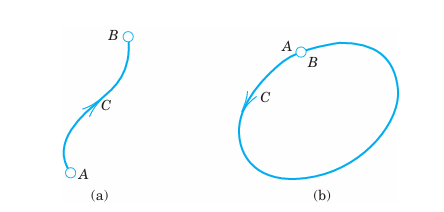
11.1.1 General Assumption
In this book, every path of integration of a line integral is assumed to be piecewise smooth, that is, it consists of finitely many smooth curves.
For example, the boundary curve of a square is piecewise smooth. It consists of four smooth curves or, in this case, line segments which are the four sides of the square.
11.1.2 Definition and Evaluation of Line Integrals
A line integral of a vector function \(\mathbf{F}(\mathbf{r})\) over a curve \(C: \mathbf{r}(t)\) is defined by \[ \int_C \mathbf{F}(\mathbf{r}) \cdot d\mathbf{r} = \int_{a}^{b} \mathbf{F}(\mathbf{r}(t)) \cdot \mathbf{r}'(t) \, dt \quad \left(d\mathbf{r} = \frac{d\mathbf{r}}{dt} \, dt\right) \tag{11.3}\] where \(\mathbf{r}(t)\) is the parametric representation of \(C\) as given in (Equation 11.2). (The dot product was defined in Section 10.2.) Writing (Equation 11.3) in terms of components, with \(d\mathbf{r} = [dx, dy, dz]\) as in Section 10.5 and \(\mathbf{r}' = d\mathbf{r}/dt\), we get \[ \int_C \mathbf{F}(\mathbf{r}) \cdot d\mathbf{r} = \int_C (F_1 \, dx + F_2 \, dy + F_3 \, dz) \tag{11.4}\] \[ = \int_{a}^{b} (F_1 x' + F_2 y' + F_3 z') \, dt. \]
If the path of integration \(C\) in (Equation 11.3) is a closed curve, then instead of \(\int_C\) we also write \(\oint_C\).
Note that the integrand in (Equation 11.3) is a scalar, not a vector, because we take the dot product. Indeed, \(\mathbf{F} \cdot (\mathbf{r}' / |\mathbf{r}'|)\) is the tangential component of \(\mathbf{F}\). (For “component” see (11) in Section 10.2.)
We see that the integral in (Equation 11.3) on the right is a definite integral of a function of \(t\) taken over the interval \(a \le t \le b\) on the \(t\)-axis in the positive direction: The direction of increasing \(t\). This definite integral exists for continuous \(\mathbf{F}\) and piecewise smooth \(C\), because this makes \(\mathbf{F} \cdot \mathbf{r}'\) piecewise continuous.
Line integrals (Equation 11.3) arise naturally in mechanics, where they give the work done by a force \(\mathbf{F}\) in a displacement along \(C\). This will be explained in detail below. We may thus call the line integral (Equation 11.3) the work integral. Other forms of the line integral will be discussed later in this section.
11.1.3 EXAMPLE 1 Evaluation of a Line Integral in the Plane
Find the value of the line integral (Equation 11.3) when \(\mathbf{F}(\mathbf{r}) = [-y, -xy] = -y\mathbf{i} - xy\mathbf{j}\) and \(C\) is the circular arc in Figure 11.2 from \(A\) to \(B\).
Solution. We may represent \(C\) by \(\mathbf{r}(t) = [\cos t, \sin t] = \cos t \mathbf{i} + \sin t \mathbf{j}\), where \(0 \le t \le \pi/2\). Then \(x(t) = \cos t\), \(y(t) = \sin t\), and \[ \mathbf{F}(\mathbf{r}(t)) = [-y(t), -x(t)y(t)] = [-\sin t, -\cos t \sin t] = -\sin t \mathbf{i} - \cos t \sin t \mathbf{j}. \] By differentiation, \(\mathbf{r}'(t) = [-\sin t, \cos t] = -\sin t \mathbf{i} + \cos t \mathbf{j}\), so that by (Equation 11.3) [use (10) in App. 3.1; set \(\cos t = u\) in the second term] \[ \int_C \mathbf{F}(\mathbf{r}) \cdot d\mathbf{r} = \int_{0}^{\pi/2} [-\sin t, -\cos t \sin t] \cdot [-\sin t, \cos t] \, dt = \int_{0}^{\pi/2} (\sin^2 t - \cos^2 t \sin t) \, dt \] \[ = \int_{0}^{\pi/2} \frac{1}{2}(1 - \cos 2t) \, dt - \int_{1}^{0} u^2 (-du) = \frac{\pi}{4} - 0 - \frac{1}{3} \approx 0.4521. \quad \square \]
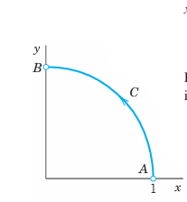
11.1.4 EXAMPLE 2 Line Integral in Space
The evaluation of line integrals in space is practically the same as it is in the plane. To see this, find the value of (Equation 11.3) when \(\mathbf{F}(\mathbf{r}) = [z, x, y] = z\mathbf{i} + x\mathbf{j} + y\mathbf{k}\) and \(C\) is the helix (Figure 11.3) \[ \mathbf{r}(t) = [\cos t, \, \sin t, \, 3t] = \cos t \mathbf{i} + \sin t \mathbf{j} + 3t\mathbf{k} \quad (0 \le t \le 2\pi). \tag{11.5}\]
Solution. From (Equation 11.5) we have \(x(t) = \cos t\), \(y(t) = \sin t\), \(z(t) = 3t\). Thus \[ \mathbf{F}(\mathbf{r}(t)) \cdot \mathbf{r}'(t) = (3t\mathbf{i} + \cos t\mathbf{j} + \sin t\mathbf{k}) \cdot (-\sin t\mathbf{i} + \cos t\mathbf{j} + 3\mathbf{k}). \] The dot product is \(-3t\sin t + \cos^2 t + 3\sin t\). Hence (Equation 11.3) gives \[ \int_C \mathbf{F}(\mathbf{r}) \cdot d\mathbf{r} = \int_{0}^{2\pi} (-3t\sin t + \cos^2 t + 3\sin t) \, dt = 6\pi + \pi + 0 = 7\pi \approx 21.99. \quad \square \]
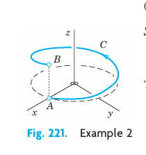
Simple general properties of the line integral (Equation 11.3) follow directly from corresponding properties of the definite integral in calculus, namely, \[ \int_C k\mathbf{F} \cdot d\mathbf{r} = k \int_C \mathbf{F} \cdot d\mathbf{r} \quad (k \text{ constant}) \tag{11.6}\] \[ \int_C (\mathbf{F} + \mathbf{G}) \cdot d\mathbf{r} = \int_C \mathbf{F} \cdot d\mathbf{r} + \int_C \mathbf{G} \cdot d\mathbf{r} \tag{11.7}\] \[ \int_C \mathbf{F} \cdot d\mathbf{r} = \int_{C_1} \mathbf{F} \cdot d\mathbf{r} + \int_{C_2} \mathbf{F} \cdot d\mathbf{r} \tag{11.8}\] where in (Equation 11.8) the path \(C\) is subdivided into two arcs \(C_1\) and \(C_2\) that have the same orientation as \(C\) (Figure 11.4). In (Equation 11.7) the orientation of \(C\) is the same in all three integrals.
If the sense of integration along \(C\) is reversed, the value of the integral is multiplied by \(-1\). However, we note the following independence if the sense is preserved.
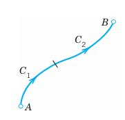
11.1.5 THEOREM 1 Direction-Preserving Parametric Transformations
Any representations of \(C\) that give the same positive direction on \(C\) also yield the same value of the line integral (Equation 11.3).
Proof. The proof follows by the chain rule. Let \(\mathbf{r}(t)\) be the given representation with \(a \le t \le b\) as in (Equation 11.3). Consider the transformation \(t = \phi(t^*)\) which transforms the \(t\) interval to \(a^* \le t^* \le b^*\) and has a positive derivative \(dt/dt^*\). We write \(\mathbf{r}(t) = \mathbf{r}(\phi(t^*)) = \mathbf{r}^*(t^*)\). Then \(dt = (dt/dt^*) \, dt^*\) and \[ \int_C \mathbf{F}(\mathbf{r}^*) \cdot d\mathbf{r}^* = \int_{a^*}^{b^*} \mathbf{F}(\mathbf{r}(\phi(t^*))) \cdot \frac{d\mathbf{r}}{dt} \frac{dt}{dt^*} \, dt^* \] \[ = \int_{a}^{b} \mathbf{F}(\mathbf{r}(t)) \cdot \frac{d\mathbf{r}}{dt} \, dt = \int_C \mathbf{F}(\mathbf{r}) \cdot d\mathbf{r}. \quad \blacksquare \]
11.1.6 Motivation of the Line Integral (Equation 11.3): Work Done by a Force
The work \(W\) done by a constant force \(\mathbf{F}\) in the displacement along a straight segment \(\mathbf{d}\) is \(W = \mathbf{F} \cdot \mathbf{d}\); see Example 2 in Section 10.2. This suggests that we define the work \(W\) done by a variable force \(\mathbf{F}\) in the displacement along a curve \(C: \mathbf{r}(t)\) as the limit of sums of works done in displacements along small chords of \(C\). We show that this definition amounts to defining \(W\) by the line integral (Equation 11.3).
For this we choose points \(t_0 (= a) < t_1 < \dots < t_n (= b)\). Then the work \(\Delta W_m\) done by \(\mathbf{F}(\mathbf{r}(t_m))\) in the straight displacement from \(\mathbf{r}(t_{m-1})\) to \(\mathbf{r}(t_m)\) is \[ \Delta W_m = \mathbf{F}(\mathbf{r}(t_m)) \cdot [\mathbf{r}(t_m) - \mathbf{r}(t_{m-1})] \approx \mathbf{F}(\mathbf{r}(t_m)) \cdot \mathbf{r}'(t_m) \Delta t_m \quad (\Delta t_m = t_m - t_{m-1}). \] The sum of these \(n\) works is \(W_n = \Delta W_1 + \dots + \Delta W_n\). If we choose points and consider \(W_n\) for every \(n\) arbitrarily but so that the greatest \(\Delta t_m\) approaches zero as \(n \to \infty\), then the limit of \(W_n\) as \(n \to \infty\) is the line integral (Equation 11.3). This integral exists because of our general assumption that \(\mathbf{F}\) is continuous and \(C\) is piecewise smooth; this makes \(\mathbf{r}'(t)\) continuous, except at finitely many points where \(C\) may have corners or cusps. \(\square\)
11.1.7 EXAMPLE 3 Work Done by a Variable Force
If \(\mathbf{F}\) in Example 1 is a force, the work done by \(\mathbf{F}\) in the displacement along the quarter-circle is \(0.4521\), measured in suitable units, say, newton-meters (\(\text{N} \cdot \text{m}\), also called joules, abbreviation J; see also inside front cover). Similarly in Example 2. \(\square\)
11.1.8 EXAMPLE 4 Work Done Equals the Gain in Kinetic Energy
Let \(\mathbf{F}\) be a force, so that (Equation 11.3) is work. Let \(t\) be time, so that \(d\mathbf{r}/dt = \mathbf{v}\), velocity. Then we can write (Equation 11.3) as \[ W = \int_C \mathbf{F} \cdot d\mathbf{r} = \int_{a}^{b} \mathbf{F}(\mathbf{r}(t)) \cdot \mathbf{v}(t) \, dt. \tag{11.9}\]
Now by Newton’s second law, that is, force = mass \(\times\) acceleration, we get \[ \mathbf{F} = m\mathbf{r}''(t) = m\mathbf{v}'(t), \] where \(m\) is the mass of the body displaced. Substitution into (Equation 11.9) gives see (11), 10.4 \[ W = \int_{a}^{b} m\mathbf{v}' \cdot \mathbf{v} \, dt = \int_{a}^{b} \frac{m}{2} \frac{d}{dt} (\mathbf{v} \cdot \mathbf{v}) \, dt = \left. \frac{m}{2} |\mathbf{v}|^2 \right|_{t=a}^{t=b}. \] On the right, \(m|\mathbf{v}|^2 / 2\) is the kinetic energy. Hence the work done equals the gain in kinetic energy. This is a basic law in mechanics. \(\square\)
11.1.9 Other Forms of Line Integrals
The line integrals \[ \int_C F_1 \, dx, \quad \int_C F_2 \, dy, \quad \int_C F_3 \, dz \tag{11.10}\] are special cases of (Equation 11.3) when \(\mathbf{F} = F_1\mathbf{i}\) or \(F_2\mathbf{j}\) or \(F_3\mathbf{k}\), respectively.
Furthermore, without taking a dot product as in (Equation 11.3) we can obtain a line integral whose value is a vector rather than a scalar, namely, \[ \int_C \mathbf{F}(\mathbf{r}) \, dt = \int_{a}^{b} \mathbf{F}(\mathbf{r}(t)) \, dt = \left[ \int_{a}^{b} F_1(\mathbf{r}(t)) \, dt, \, \int_{a}^{b} F_2(\mathbf{r}(t)) \, dt, \, \int_{a}^{b} F_3(\mathbf{r}(t)) \, dt \right]. \tag{11.11}\]
Obviously, a special case of (Equation 11.10) is obtained by taking \(F_1 = f\), \(F_2 = F_3 = 0\). Then \[ \int_C f(\mathbf{r}) \, dt = \int_{a}^{b} f(\mathbf{r}(t)) \, dt \tag{11.12}\] with \(C\) as in (Equation 11.2). The evaluation is similar to that before.
11.1.10 EXAMPLE 5 A Line Integral of the Form (8)
Integrate \(\mathbf{F}(\mathbf{r}) = [xy, yz, z]\) along the helix in Example 2.
Solution. \(\mathbf{F}(\mathbf{r}(t)) = [\cos t \sin t, 3t \sin t, 3t]\) integrated with respect to \(t\) from \(0\) to \(2\pi\) gives \[ \int_{0}^{2\pi} \mathbf{F}(\mathbf{r}(t)) \, dt = \left. \left[ -\frac{1}{2} \cos^2 t, \, 3\sin t - 3t\cos t, \, \frac{3}{2} t^2 \right] \right|_{0}^{2\pi} = [0, -6\pi, 6\pi^2]. \quad \square \]
11.1.11 Path Dependence
Path dependence of line integrals is practically and theoretically so important that we formulate it as a theorem. And a whole section (Section 11.2) will be devoted to conditions under which path dependence does not occur.
11.1.12 THEOREM 2 Path Dependence
The line integral (Equation 11.3) generally depends not only on \(\mathbf{F}\) and on the endpoints \(A\) and \(B\) of the path, but also on the path itself along which the integral is taken.
Proof. Almost any example will show this. Take, for instance, the straight segment \(C_1: \mathbf{r}_1(t) = [t, t, 0]\) and the parabola \(C_2: \mathbf{r}_2(t) = [t, t^2, 0]\) with \(0 \le t \le 1\) (Figure 11.5) and integrate \(\mathbf{F} = [0, xy, 0]\). Then \(\mathbf{F}(\mathbf{r}_1(t)) \cdot \mathbf{r}_1'(t) = t^2\), \(\mathbf{F}(\mathbf{r}_2(t)) \cdot \mathbf{r}_2'(t) = 2t^4\), so that integration gives \(1/3\) and \(2/5\), respectively. \(\blacksquare\)
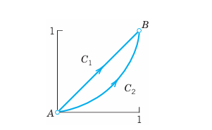
11.1.13 PROBLEM SET 10.1
1. WRITING PROJECT. From Definite Integrals to Line Integrals. Write a short report (1–2 pages) with examples on line integrals as generalizations of definite integrals. The latter give the area under a curve. Explain the corresponding geometric interpretation of a line integral.
2–11 LINE INTEGRAL. WORK
Calculate \(\int_C \mathbf{F}(\mathbf{r}) \cdot d\mathbf{r}\) for the given data. If \(\mathbf{F}\) is a force, this gives the work done by the force in the displacement along \(C\). Show the details of your work.
2. \(\mathbf{F} = [y^2, -x^2]\), \(C: y = 4x^2\) from \((0, 0)\) to \((1, 4)\)
3. \(\mathbf{F}\) as in Prob. 2, \(C\) from \((0, 0)\) straight to \((1, 4)\). Compare.
4. \(\mathbf{F} = [xy, x^2 y^2]\), \(C\) from \((2, 0)\) straight to \((0, 2)\)
5. \(\mathbf{F}\) as in Prob. 4, \(C\) the quarter-circle from \((2, 0)\) to \((0, 2)\) with center \((0, 0)\)
6. \(\mathbf{F} = [x-y, y-z, z-x]\), \(C: \mathbf{r} = [2\cos t, t, 2\sin t]\) from \((2, 0, 0)\) to \((2, 2\pi, 0)\)
7. \(\mathbf{F} = [x^2, y^2, z^2]\), \(C: \mathbf{r} = [\cos t, \sin t, e^t]\) from \((1, 0, 1)\) to \((1, 0, e^{2\pi})\). Sketch \(C\).
8. \(\mathbf{F} = [e^x, \cosh y, \sinh z]\), \(C: \mathbf{r} = [t, t^2, t^3]\) from \((0, 0, 0)\) to \((1, 1, 1)\). Sketch \(C\).
9. \(\mathbf{F} = [x+y, y+z, z+x]\), \(C: \mathbf{r} = [2t, 5t, t]\) from \(t = 0\) to \(1\). Also from \(t = -1\) to \(1\).
10. \(\mathbf{F} = [x, -z, 2y]\) from \((0, 0, 0)\) straight to \((1, 1, 0)\), then to \((1, 1, 1)\), back to \((0, 0, 0)\)
11. \(\mathbf{F} = [e^{-x}, e^{-y}, e^{-z}]\), \(C: \mathbf{r} = [t, t^2, t]\) from \((0, 0, 0)\) to \((2, 4, 2)\). Sketch \(C\).
12. PROJECT. Change of Parameter. Path Dependence.
Consider the integral \(\int_C \mathbf{F}(\mathbf{r}) \cdot d\mathbf{r}\), where \(\mathbf{F} = [xy, -y^2]\).
(a) One path, several representations. Find the value of the integral when \(\mathbf{r} = [\cos t, \sin t]\), \(0 \le t \le \pi/2\). Show that the value remains the same if you set \(t = -\phi\) or \(t = \phi^2\) or apply two other parametric transformations of your own choice.
(b) Several paths. Evaluate the integral when \(C: y = x^n\), thus \(\mathbf{r} = [t, t^n]\), \(0 \le t \le 1\), where \(n = 1, 2, 3, \dots\). Note that these infinitely many paths have the same endpoints.
(c) Limit. What is the limit in (b) as \(n \to \infty\)? Can you confirm your result by direct integration without referring to (b)?
(d) Show path dependence with a simple example of your choice involving two paths.
13. ML-Inequality, Estimation of Line Integrals. Let \(\mathbf{F}\) be a vector function defined on a curve \(C\). Let \(|\mathbf{F}|\) be bounded, say, \(|\mathbf{F}| \le M\) on \(C\), where \(M\) is some positive number. Show that \[ \left| \int_C \mathbf{F} \cdot d\mathbf{r} \right| \le ML \quad (L = \text{Length of } C). \tag{11.13}\]
14. Using (Equation 11.13), find a bound for the absolute value of the work \(W\) done by the force \(\mathbf{F} = [x^2, y]\) in the displacement from \((0, 0)\) straight to \((3, 4)\). Integrate exactly and compare. Sketch \(C\).
**15–20 INTEGRALS (8) AND (8*)**
Evaluate them with \(\mathbf{F}\) or \(f\) and \(C\) as follows.
15. \(\mathbf{F} = [y^2, z^2, x^2]\), \(C: \mathbf{r} = [3\cos t, 3\sin t, 2t]\), \(0 \le t \le 4\pi\)
16. \(f = 3x + y + 5z\), \(C: \mathbf{r} = [t, \cosh t, \sinh t]\), \(0 \le t \le 1\). Sketch \(C\).
17. \(\mathbf{F} = [x+y, y+z, z+x]\), \(C: \mathbf{r} = [4\cos t, \sin t, 0]\), \(0 \le t \le \pi\)
18. \(\mathbf{F} = [y^{1/3}, x^{1/3}, 0]\), \(C\) the hypocycloid \(\mathbf{r} = [\cos^3 t, \sin^3 t, 0]\), \(0 \le t \le \pi/4\)
19. \(f = xyz\), \(C: \mathbf{r} = [4t, 3t^2, 12t]\), \(-2 \le t \le 2\). Sketch \(C\).
20. \(\mathbf{F} = [xz, yz, x^2 y^2]\), \(C: \mathbf{r} = [t, t, e^t]\), \(0 \le t \le 5\). Sketch \(C\).
11.2 Path Independence of Line Integrals
We want to find out under what conditions, in some domain, a line integral takes on the same value no matter what path of integration is taken (in that domain). As before we consider line integrals \[ \int_C \mathbf{F}(\mathbf{r}) \cdot d\mathbf{r} = \int_C (F_1 \, dx + F_2 \, dy + F_3 \, dz) \quad (d\mathbf{r} = [dx, \, dy, \, dz]). \tag{11.14}\]
The line integral (Equation 11.14) is said to be path independent in a domain \(D\) in space if for every pair of endpoints \(A, B\) in domain \(D\), (Equation 11.14) has the same value for all paths in \(D\) that begin at \(A\) and end at \(B\). This is illustrated in Figure 11.6. (See Section 10.6 for “domain.”)
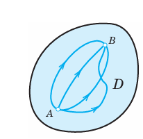
Path independence is important. For instance, in mechanics it may mean that we have to do the same amount of work regardless of the path to the mountaintop, be it short and steep or long and gentle. Or it may mean that in releasing an elastic spring we get back the work done in expanding it. Not all forces are of this type—think of swimming in a big round pool in which the water is rotating as in a whirlpool.
We shall follow up with three ideas about path independence. We shall see that path independence of (Equation 11.14) in a domain \(D\) holds if and only if:
- Theorem 1: \(\mathbf{F} = \operatorname{grad} f\), where \(\operatorname{grad} f\) is the gradient of \(f\) as explained in Section 10.7.
- Theorem 2: Integration around closed curves \(C\) in \(D\) always gives 0.
- Theorem 3: \(\operatorname{curl} \mathbf{F} = \mathbf{0}\), provided \(D\) is simply connected, as defined below.
Do you see that these theorems can help in understanding the examples and counterexample just mentioned?
Let us begin our discussion with the following very practical criterion for path independence.
11.2.1 THEOREM 1 Path Independence
A line integral (Equation 11.14) with continuous \(F_1, F_2, F_3\) in a domain \(D\) in space is path independent in \(D\) if and only if \(\mathbf{F} = [F_1, F_2, F_3]\) is the gradient of some function \(f\) in \(D\), \[ \mathbf{F} = \operatorname{grad} f, \quad \text{thus} \quad F_1 = \frac{\partial f}{\partial x}, \quad F_2 = \frac{\partial f}{\partial y}, \quad F_3 = \frac{\partial f}{\partial z}. \tag{11.15}\]
Proof.
(a) We assume that (Equation 11.15) holds for some function \(f\) in \(D\) and show that this implies path independence. Let \(C\) be any path in \(D\) from any point \(A\) to any point \(B\) in \(D\), given by \(\mathbf{r}(t) = [x(t), y(t), z(t)]\), where \(a \le t \le b\). Then from (Equation 11.15), the chain rule in Section 10.6, and (Equation 11.4) in the last section we obtain \[
\int_C (F_1 \, dx + F_2 \, dy + F_3 \, dz) = \int_C \left( \frac{\partial f}{\partial x} \, dx + \frac{\partial f}{\partial y} \, dy + \frac{\partial f}{\partial z} \, dz \right)
\] \[
= \int_{a}^{b} \left( \frac{\partial f}{\partial x} \frac{dx}{dt} + \frac{\partial f}{\partial y} \frac{dy}{dt} + \frac{\partial f}{\partial z} \frac{dz}{dt} \right) \, dt
\] \[
= \int_{a}^{b} \frac{df}{dt} \, dt = \left. f(x(t), y(t), z(t)) \right|_{t=a}^{t=b} = f(B) - f(A). \quad \square
\] (b) The more complicated proof of the converse, that path independence implies (Equation 11.15) for some \(f\), is given in App. 4. \(\blacksquare\)
The last formula in part (a) of the proof, \[ \int_{A}^{B} (F_1 \, dx + F_2 \, dy + F_3 \, dz) = f(B) - f(A) \quad [\mathbf{F} = \operatorname{grad} f] \tag{11.16}\] is the analog of the usual formula for definite integrals in calculus, \[ \int_{a}^{b} g(x) \, dx = \left. G(x) \right|_a^b = G(b) - G(a) \quad [G'(x) = g(x)]. \]
Formula (Equation 11.16) should be applied whenever a line integral is independent of path.
Potential theory relates to our present discussion if we remember from Section 10.7 that when \(\mathbf{F} = \operatorname{grad} f\), then \(f\) is called a potential of \(\mathbf{F}\). Thus the integral (Equation 11.14) is independent of path in \(D\) if and only if \(\mathbf{F}\) is the gradient of a potential in \(D\).
11.2.2 EXAMPLE 1 Path Independence
Show that the integral \(\int_C \mathbf{F} \cdot d\mathbf{r} = \int_C (2x \, dx + 2y \, dy + 4z \, dz)\) is path independent in any domain in space and find its value in the integration from \(A: (0, 0, 0)\) to \(B: (2, 2, 2)\).
Solution. \(\mathbf{F} = [2x, 2y, 4z] = \operatorname{grad} f\), where \(f = x^2 + y^2 + 2z^2\) because \(\partial f / \partial x = 2x = F_1\), \(\partial f / \partial y = 2y = F_2\), \(\partial f / \partial z = 4z = F_3\). Hence the integral is independent of path according to Theorem 1, and (Equation 11.16) gives \[ f(B) - f(A) = f(2, 2, 2) - f(0, 0, 0) = 4 + 4 + 8 = 16. \] If you want to check this, use the most convenient path \(C: \mathbf{r}(t) = [t, t, t]\), \(0 \le t \le 2\), on which \(\mathbf{F}(\mathbf{r}(t)) = [2t, 2t, 4t]\), so that \(\mathbf{F}(\mathbf{r}(t)) \cdot \mathbf{r}'(t) = 2t + 2t + 4t = 8t\), and integration from 0 to 2 gives \(8 \times 2^2 / 2 = 16\). \(\square\)
If you did not see the potential by inspection, use the method in the next example.
11.2.3 EXAMPLE 2 Path Independence. Determination of a Potential
Evaluate the integral \(I = \int_C (3x^2 \, dx + 2yz \, dy + y^2 \, dz)\) from \(A: (0, 1, 2)\) to \(B: (1, -1, 7)\) by showing that \(\mathbf{F}\) has a potential and applying (Equation 11.16).
Solution. If \(\mathbf{F}\) has a potential \(f\), we should have \[ f_x = F_1 = 3x^2, \quad f_y = F_2 = 2yz, \quad f_z = F_3 = y^2. \] We show that we can satisfy these conditions. By integration of \(f_x\) and differentiation, \[ f = x^3 + g(y, z), \quad f_y = g_y = 2yz \implies g = y^2 z + h(z), \quad f = x^3 + y^2 z + h(z) \] \[ f_z = y^2 + h'(z) = y^2 \implies h'(z) = 0 \implies h(z) = 0 \text{ (say)}. \] This gives \(f(x, y, z) = x^3 + y^2 z\) and by (Equation 11.16), $$ I = f(1, -1, 7) - f(0, 1, 2) = (1 + 7) - (0 + 2) = 6. ```
11.2.4 Path Independence and Integration Around Closed Curves
The simple idea is that two paths with common endpoints (Figure 11.7) make up a single closed curve. This gives almost immediately:
11.2.5 THEOREM 2 Path Independence
The integral (Equation 11.14) is path independent in a domain \(D\) if and only if its value around every closed path in \(D\) is zero.
Proof. If we have path independence, then integration from \(A\) to \(B\) along \(C_1\) and along \(C_2\) in Figure 11.7 gives the same value. Now \(C_1\) and \(C_2\) together make up a closed curve \(C\), and if we integrate from \(A\) along \(C_1\) to \(B\) as before, but then in the opposite sense along \(C_2\) back to \(A\) (so that this second integral is multiplied by \(-1\)), the sum of the two integrals is zero, but this is the integral around the closed curve \(C\).
Conversely, assume that the integral around any closed path \(C\) in \(D\) is zero. Given any points \(A\) and \(B\) and any two curves \(C_1\) and \(C_2\) from \(A\) to \(B\) in \(D\), we see that \(C_1\) with the orientation reversed and \(C_2\) together form a closed path \(C\). By assumption, the integral over \(C\) is zero. Hence the integrals over \(C_1\) and \(C_2\), both taken from \(A\) to \(B\), must be equal. This proves the theorem. \(\blacksquare\)
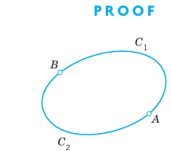
11.2.6 Work. Conservative and Nonconservative (Dissipative) Physical Systems
Recall from the last section that in mechanics, the integral (Equation 11.14) gives the work done by a force \(\mathbf{F}\) in the displacement of a body along the curve \(C\). Then Theorem 2 states that work is path independent in \(D\) if and only if its value is zero for displacement around every closed path in \(D\). Furthermore, Theorem 1 tells us that this happens if and only if \(\mathbf{F}\) is the gradient of a potential in \(D\). In this case, \(\mathbf{F}\) and the vector field defined by \(\mathbf{F}\) are called conservative in \(D\) because in this case mechanical energy is conserved; that is, no work is done in the displacement from a point \(A\) and back to \(A\). Similarly for the displacement of an electrical charge (an electron, for instance) in a conservative electrostatic field.
Physically, the kinetic energy of a body can be interpreted as the ability of the body to do work by virtue of its motion, and if the body moves in a conservative field of force, after the completion of a round trip the body will return to its initial position with the same kinetic energy it had originally. For instance, the gravitational force is conservative; if we throw a ball vertically up, it will (if we assume air resistance to be negligible) return to our hand with the same kinetic energy it had when it left our hand.
Friction, air resistance, and water resistance always act against the direction of motion. They tend to diminish the total mechanical energy of a system, usually converting it into heat or mechanical energy of the surrounding medium (possibly both). Furthermore, if during the motion of a body, these forces become so large that they can no longer be neglected, then the resultant force \(\mathbf{F}\) of the forces acting on the body is no longer conservative. This leads to the following terms. A physical system is called conservative if all the forces acting in it are conservative. If this does not hold, then the physical system is called nonconservative or dissipative.
11.2.7 Path Independence and Exactness of Differential Forms
Theorem 1 relates path independence of the line integral (Equation 11.14) to the gradient and Theorem 2 to integration around closed curves. A third idea (leading to Theorems 3* and 3, below) relates path independence to the exactness of the differential form or Pfaffian form \[ \mathbf{F} \cdot d\mathbf{r} = F_1 \, dx + F_2 \, dy + F_3 \, dz \tag{11.17}\] under the integral sign in (Equation 11.14). This form (Equation 11.17) is called exact in a domain \(D\) in space if it is the differential \[ df = \frac{\partial f}{\partial x} \, dx + \frac{\partial f}{\partial y} \, dy + \frac{\partial f}{\partial z} \, dz = (\operatorname{grad} f) \cdot d\mathbf{r} \] of a differentiable function \(f(x, y, z)\) everywhere in \(D\), that is, if we have \[ \mathbf{F} \cdot d\mathbf{r} = df. \]
Comparing these two formulas, we see that the form (Equation 11.17) is exact if and only if there is a differentiable function \(f(x, y, z)\) in \(D\) such that everywhere in \(D\), \[ \mathbf{F} = \operatorname{grad} f, \quad \text{thus} \quad F_1 = \frac{\partial f}{\partial x}, \quad F_2 = \frac{\partial f}{\partial y}, \quad F_3 = \frac{\partial f}{\partial z}. \tag{11.18}\]
Hence Theorem 1 implies:
11.2.8 THEOREM 3* Path Independence
The integral (Equation 11.14) is path independent in a domain \(D\) in space if and only if the differential form (Equation 11.17) has continuous coefficient functions \(F_1, F_2, F_3\) and is exact in \(D\).
This theorem is of practical importance because it leads to a useful exactness criterion. First we need the following concept, which is of general interest.
A domain \(D\) is called simply connected if every closed curve in \(D\) can be continuously shrunk to any point in \(D\) without leaving \(D\).
For example, the interior of a sphere or a cube, the interior of a sphere with finitely many points removed, and the domain between two concentric spheres are simply connected. On the other hand, the interior of a torus, which is a doughnut as shown in Fig. 249 in Section 11.6, is not simply connected. Neither is the interior of a cube with one space diagonal removed.
The criterion for exactness (and path independence by Theorem 3*) is now as follows.
11.2.9 THEOREM 3 Criterion for Exactness and Path Independence
Let \(F_1, F_2, F_3\) in the line integral (Equation 11.14), \[ \int_C \mathbf{F}(\mathbf{r}) \cdot d\mathbf{r} = \int_C (F_1 \, dx + F_2 \, dy + F_3 \, dz), \] be continuous and have continuous first partial derivatives in a domain \(D\) in space. Then:
(a) If the differential form (Equation 11.17) is exact in \(D\)—and thus (Equation 11.14) is path independent by Theorem 3*—, then in \(D\), \[ \operatorname{curl} \mathbf{F} = \mathbf{0}; \tag{11.19}\] in components (see Section 10.9) \[ \frac{\partial F_3}{\partial y} = \frac{\partial F_2}{\partial z}, \quad \frac{\partial F_1}{\partial z} = \frac{\partial F_3}{\partial x}, \quad \frac{\partial F_2}{\partial x} = \frac{\partial F_1}{\partial y}. \tag{11.20}\]
(b) If (Equation 11.19) holds in \(D\) and \(D\) is simply connected, then (Equation 11.17) is exact in \(D\)—and thus (Equation 11.14) is path independent by Theorem 3*.
Proof.
(a) If (Equation 11.17) is exact in \(D\), then \(\mathbf{F} = \operatorname{grad} f\) in \(D\) by Theorem 3*, and, furthermore, \(\operatorname{curl} \mathbf{F} = \operatorname{curl} (\operatorname{grad} f) = \mathbf{0}\) by (2) in Section 10.9, so that (Equation 11.19) holds.
(b) The proof needs “Stokes’s theorem” and will be given in Section 11.9. \(\blacksquare\)
11.2.10 Line Integral in the Plane
For \(\int_C \mathbf{F}(\mathbf{r}) \cdot d\mathbf{r} = \int_C (F_1 \, dx + F_2 \, dy)\) the curl has only one component (the \(z\)-component), so that (Equation 11.20) reduces to the single relation \[ \frac{\partial F_2}{\partial x} = \frac{\partial F_1}{\partial y} \tag{11.21}\] (which also occurs in (5) of Sec. 1.4 on exact ODEs).
11.2.11 EXAMPLE 3 Exactness and Independence of Path. Determination of a Potential
Using (Equation 11.20), show that the differential form under the integral sign of \[ I = \int_C [2xyz^2 \, dx + (x^2 z^2 + z \cos yz) \, dy + (2x^2 yz + y \cos yz) \, dz] \] is exact, so that we have independence of path in any domain, and find the value of \(I\) from \(A: (0, 0, 1)\) to \(B: (1, \pi/4, 2)\).
Solution. Exactness follows from (Equation 11.20), which gives \[ (F_3)_y = 2x^2 z + \cos yz - yz \sin yz = (F_2)_z, \] \[ (F_1)_z = 4xyz = (F_3)_x, \] \[ (F_2)_x = 2xz^2 = (F_1)_y. \] To find \(f\), we integrate \(F_2\) (which is “long,” so that we save work) and then differentiate to compare with \(F_1\) and \(F_3\), \[ f = \int F_2 \, dy = \int (x^2 z^2 + z \cos yz) \, dy = x^2 z^2 y + \sin yz + g(x, z) \] \[ f_x = 2xz^2 y + g_x = F_1 = 2xyz^2 \implies g_x = 0 \implies g = h(z) \] \[ f_z = 2x^2 zy + y \cos yz + h'(z) = F_3 = 2x^2 zy + y \cos yz \implies h'(z) = 0. \] \(h'(z) = 0\) implies \(h(z) = \text{const}\), and we can take \(h(z) = 0\), so that \(g = 0\) in the first line. This gives, by (Equation 11.16), \[ f(x, y, z) = x^2 y z^2 + \sin yz, \quad f(B) - f(A) = 1 \cdot \frac{\pi}{4} \cdot 4 + \sin \pi - 0 = \pi. \quad \square \]
The assumption in Theorem 3 that \(D\) is simply connected is essential and cannot be omitted. Perhaps the simplest example to see this is the following.
11.2.12 EXAMPLE 4 On the Assumption of Simple Connectedness in Theorem 3
Let \[ F_1 = -\frac{y}{x^2 + y^2}, \quad F_2 = \frac{x}{x^2 + y^2}, \quad F_3 = 0. \tag{11.22}\]
Differentiation shows that (Equation 11.21) is satisfied in any domain of the \(xy\)-plane not containing the origin, for example, in the domain \(D: 1 < x^2 + y^2 < 3\) shown in Figure 11.8. Indeed, \(F_1\) and \(F_2\) do not depend on \(z\), and \(F_3 = 0\), so that the first two relations in (Equation 11.20) are trivially true, and the third is verified by differentiation: \[ \frac{\partial F_2}{\partial x} = \frac{x^2 + y^2 - x \cdot 2x}{(x^2 + y^2)^2} = \frac{y^2 - x^2}{(x^2 + y^2)^2}, \] \[ \frac{\partial F_1}{\partial y} = -\frac{x^2 + y^2 - y \cdot 2y}{(x^2 + y^2)^2} = \frac{y^2 - x^2}{(x^2 + y^2)^2}. \]
Clearly, \(D\) in Figure 11.8 is not simply connected. If the integral \[ I = \int_C (F_1 \, dx + F_2 \, dy) = \int_C \frac{-y \, dx + x \, dy}{x^2 + y^2} \] were independent of path in \(D\), then \(I = 0\) on any closed curve in \(D\), for example, on the circle \(x^2 + y^2 = 1\). But setting \(x = r \cos \theta\), \(y = r \sin \theta\) and noting that the circle is represented by \(r = 1\), we have \[ x = \cos \theta, \quad dx = -\sin \theta \, d\theta, \quad y = \sin \theta, \quad dy = \cos \theta \, d\theta, \] so that \(-y \, dx + x \, dy = \sin^2 \theta \, d\theta + \cos^2 \theta \, d\theta = d\theta\) and counterclockwise integration gives \[ I = \int_{0}^{2\pi} d\theta = 2\pi. \] Since \(D\) is not simply connected, we cannot apply Theorem 3 and cannot conclude that \(I\) is independent of path in \(D\).
Although \(\mathbf{F} = \operatorname{grad} f\), where \(f = \arctan(y/x)\) (verify!), we cannot apply Theorem 1 either because the polar angle \(f = \theta = \arctan(y/x)\) is not single-valued, as it is required for a function in calculus. \(\square\)
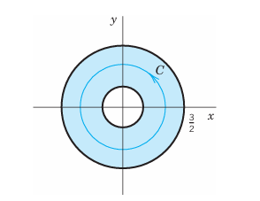
11.2.13 PROBLEM SET 10.2
1. WRITING PROJECT. Report on Path Independence. Make a list of the main ideas and facts on path independence and dependence in this section. Then work this list into a report. Explain the definitions and the practical usefulness of the theorems, with illustrative examples of your own. No proofs.
2. On Example 4. Does the situation in Example 4 of the text change if you take the domain \(0 < x^2 + y^2 < 3\)?
3–9 PATH INDEPENDENT INTEGRALS
Show that the form under the integral sign is exact in the plane (Probs. 3–4) or in space (Probs. 5–9) and evaluate the integral. Show the details of your work.
3. \(\int_{(0, \pi)}^{(\pi/2, \pi/2)} (\cos x \cos 2y \, dx - 2\sin x \sin 2y \, dy)\)
4. \(\int_{(4, 0)}^{(6, 1)} e^{4y}(2x \, dx + 4x^2 \, dy)\)
5. \(\int_{(0, 0, \pi)}^{(2, 1/2, \pi/2)} e^{xy}(y \sin z \, dx + x \sin z \, dy + \cos z \, dz)\)
6. \(\int_{(0, 0, 0)}^{(1, 1, 0)} e^{x^2 + y^2 + z^2}(x \, dx + y \, dy + z \, dz)\)
7. \(\int_{(0, 2, 3)}^{(1, 1, 1)} (yz \sinh xz \, dx + \cosh xz \, dy + xy \sinh xz \, dz)\)
8. \(\int_{(5, 3, \pi)}^{(3, \pi, 3)} (\cos yz \, dx - xz \sin yz \, dy - xy \sin yz \, dz)\)
9. \(\int_{(0, 1, 0)}^{(1, 0, 1)} (e^x \cosh y \, dx + (e^x \sinh y + e^z \cosh y) \, dy + e^z \sinh y \, dz)\)
10. PROJECT. Path Dependence.
(a) Show that \(I = \int_C (x^2 y \, dx + 2xy^2 \, dy)\) is path dependent in the \(xy\)-plane.
(b) Integrate from \((0, 0)\) along the straight-line segment to \((1, b)\), \(0 \le b \le 1\), and then vertically up to \((1, 1)\); see the figure. For which \(b\) is \(I\) maximum? What is its maximum value?
(c) Integrate \(I\) from \((0, 0)\) along the straight-line segment to \((c, 1)\), \(0 \le c \le 1\), and then horizontally to \((1, 1)\). For \(c = 1\), do you get the same value as for \(b = 1\) in (b)? For which \(c\) is \(I\) maximum? What is its maximum value?

11. On Example 4. Show that in Example 4 of the text, \(\mathbf{F} = \operatorname{grad}(\arctan(y/x))\). Give examples of domains in which the integral is path independent.
12. CAS EXPERIMENT. Extension of Project 10. Integrate \(x^2 y \, dx + 2xy^2 \, dy\) over various circles through the points \((0, 0)\) and \((1, 1)\). Find experimentally the smallest value of the integral and the approximate location of the center of the circle.
13–19 PATH INDEPENDENCE?
Check, and if independent, integrate from \((0, 0, 0)\) to \((a, b, c)\).
13. \(2e^{x^2}(x \cos 2y \, dx - \sin 2y \, dy)\)
14. \((\sinh xy)(z \, dx - x \, dz)\)
15. \(x^2 y \, dx - 4xy^2 \, dy + 8z^2 x \, dz\)
16. \(e^y \, dx + (xe^y - e^z) \, dy - ye^z \, dz\)
17. \(4y \, dx + z \, dy + (y - 2z) \, dz\)
18. \((\cos xy)(yz \, dx + xz \, dy) - 2\sin xy \, dz\)
19. \((\cos(x^2 + 2y^2 + z^2))(2x \, dx + 4y \, dy + 2z \, dz)\)
20. Path Dependence. Construct three simple examples in each of which two equations in (Equation 11.20) are satisfied, but the third is not.
11.3 Calculus Review: Double Integrals (Optional)
This section is optional. Students familiar with double integrals from calculus should skip this review and go on to Section 11.4. This section is included in the book to make it reasonably self-contained.
In a definite integral (Equation 11.1), Section 11.1, we integrate a function \(f(x)\) over an interval (a segment) of the \(x\)-axis. In a double integral we integrate a function \(f(x, y)\), called the integrand, over a closed bounded region1 \(R\) in the \(xy\)-plane, whose boundary curve has a unique tangent at almost every point, but may perhaps have finitely many cusps (such as the vertices of a triangle or rectangle).
The definition of the double integral is quite similar to that of the definite integral. We subdivide the region \(R\) by drawing parallels to the \(x\)- and \(y\)-axes (Figure 11.10). We number the rectangles that are entirely within \(R\) from 1 to \(n\). In each such rectangle we choose a point, say, \((x_k, y_k)\) in the \(k\)-th rectangle, whose area we denote by \(\Delta A_k\). Then we form the sum \[ J_n = \sum_{k=1}^n f(x_k, y_k) \Delta A_k. \]
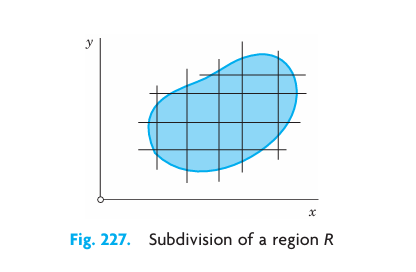
This we do for larger and larger positive integers \(n\) in a completely independent manner, but so that the length of the maximum diagonal of the rectangles approaches zero as \(n\) approaches infinity. In this fashion we obtain a sequence of real numbers \(J_{n_1}, J_{n_2}, \dots\).
Assuming that \(f(x, y)\) is continuous in \(R\) and \(R\) is bounded by finitely many smooth curves (see Section 11.1), one can show (see Ref. [GenRef4] in App. 1) that this sequence converges and its limit is independent of the choice of subdivisions and corresponding points \((x_k, y_k)\). This limit is called the double integral of \(f(x, y)\) over the region \(R\), and is denoted by \[ \iint_R f(x, y) \, dx \, dy \quad \text{or} \quad \iint_R f(x, y) \, dA. \]
Double integrals have properties quite similar to those of definite integrals. Indeed, for any functions \(f\) and \(g\) of \((x, y)\), defined and continuous in a region \(R\), \[ \iint_R k f \, dx \, dy = k \iint_R f \, dx \, dy \quad (k \text{ constant}) \] \[ \iint_R (f + g) \, dx \, dy = \iint_R f \, dx \, dy + \iint_R g \, dx \, dy \tag{11.23}\] \[ \iint_R f \, dx \, dy = \iint_{R_1} f \, dx \, dy + \iint_{R_2} f \, dx \, dy \quad (\text{see } @fig-10-228). \tag{11.24}\]
Furthermore, if \(R\) is simply connected (see Section 11.2), then there exists at least one point \((x_0, y_0)\) in \(R\) such that we have \[ \iint_R f(x, y) \, dx \, dy = f(x_0, y_0) A, \tag{11.25}\] where \(A\) is the area of \(R\). This is called the mean value theorem for double integrals.
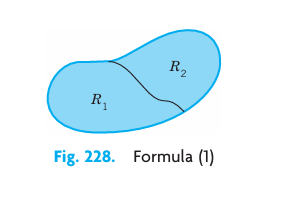
11.3.1 Evaluation of Double Integrals by Two Successive Integrations
Double integrals over a region \(R\) may be evaluated by two successive integrations. We may integrate first over \(y\) and then over \(x\). Then the formula is \[ \iint_R f(x, y) \, dx \, dy = \int_a^b \left[ \int_{g(x)}^{h(x)} f(x, y) \, dy \right] dx \quad (\text{see } @fig-10-229). \tag{11.26}\]
Here \(y = g(x)\) and \(y = h(x)\) represent the boundary curve of \(R\) (see Figure 11.12) and, keeping \(x\) constant, we integrate \(f(x, y)\) over \(y\) from \(g(x)\) to \(h(x)\). The result is a function of \(x\), and we integrate it from \(x = a\) to \(x = b\) (Figure 11.12).
Similarly, for integrating first over \(x\) and then over \(y\) the formula is \[ \iint_R f(x, y) \, dx \, dy = \int_c^d \left[ \int_{p(y)}^{q(y)} f(x, y) \, dx \right] dy \quad (\text{see } @fig-10-230). \tag{11.27}\]
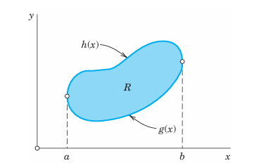
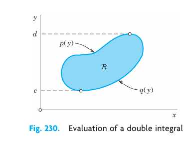
The boundary curve of \(R\) is now represented by \(x = p(y)\) and \(x = q(y)\). Treating \(y\) as a constant, we first integrate \(f(x, y)\) over \(x\) from \(p(y)\) to \(q(y)\) (see Figure 11.13) and then the resulting function of \(y\) from \(y = c\) to \(y = d\).
In (Equation 11.26) we assumed that \(R\) can be given by inequalities \(a \le x \le b\) and \(g(x) \le y \le h(x)\). Similarly in (Equation 11.27) by \(c \le y \le d\) and \(p(y) \le x \le q(y)\). If a region \(R\) has no such representation, then, in any practical case, it will at least be possible to subdivide \(R\) into finitely many portions each of which can be given by those inequalities. Then we integrate \(f(x, y)\) over each portion and take the sum of the results. This will give the value of the integral of \(f(x, y)\) over the entire region \(R\).
11.3.2 Applications of Double Integrals
Double integrals have various physical and geometric applications. For instance, the area \(A\) of a region \(R\) in the \(xy\)-plane is given by the double integral \[ A = \iint_R dx \, dy. \]
The volume \(V\) beneath the surface \(z = f(x, y)\) (\(\ge 0\)) and above a region \(R\) in the \(xy\)-plane is (Figure 11.14) \[ V = \iint_R f(x, y) \, dx \, dy \] because the term \(f(x_k, y_k) \Delta A_k\) in \(J_n\) at the beginning of this section represents the volume of a rectangular box with base of area \(\Delta A_k\) and altitude \(f(x_k, y_k)\).
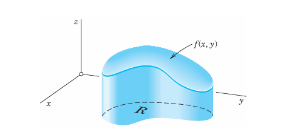
As another application, let \(f(x, y)\) be the density (= mass per unit area) of a distribution of mass in the \(xy\)-plane. Then the total mass \(M\) in \(R\) is \[ M = \iint_R f(x, y) \, dx \, dy; \] the center of gravity of the mass in \(R\) has the coordinates \(\bar{x}, \bar{y}\), where \[ \bar{x} = \frac{1}{M} \iint_R x f(x, y) \, dx \, dy \quad \text{and} \quad \bar{y} = \frac{1}{M} \iint_R y f(x, y) \, dx \, dy; \] the moments of inertia \(I_x\) and \(I_y\) of the mass in \(R\) about the \(x\)- and \(y\)-axes, respectively, are \[ I_x = \iint_R y^2 f(x, y) \, dx \, dy, \quad I_y = \iint_R x^2 f(x, y) \, dx \, dy; \] and the polar moment of inertia \(I_0\) about the origin of the mass in \(R\) is \[ I_0 = I_x + I_y = \iint_R (x^2 + y^2) f(x, y) \, dx \, dy. \]
An example is given below.
11.3.3 Change of Variables in Double Integrals. Jacobian
Practical problems often require a change of the variables of integration in double integrals. Recall from calculus that for a finite integral the formula for the change from \(x\) to \(u\) is \[ \int_a^b f(x) \, dx = \int_{\alpha}^{\beta} f(x(u)) \frac{dx}{du} \, du. \tag{11.28}\]
Here we assume that \(x = x(u)\) is continuous and has a continuous derivative in some interval \(\alpha \le u \le \beta\) such that \(x(\alpha) = a\), \(x(\beta) = b\) [or \(x(\alpha) = b\), \(x(\beta) = a\)] and \(x(u)\) varies between \(a\) and \(b\) when \(u\) varies between \(\alpha\) and \(\beta\).
The formula for a change of variables in double integrals from \(x, y\) to \(u, v\) is \[ \iint_R f(x, y) \, dx \, dy = \iint_{R^*} f(x(u, v), y(u, v)) \left| \frac{\partial(x, y)}{\partial(u, v)} \right| \, du \, dv; \tag{11.29}\] that is, the integrand is expressed in terms of \(u\) and \(v\), and \(dx \, dy\) is replaced by \(du \, dv\) times the absolute value of the Jacobian2 \[ J = \frac{\partial(x, y)}{\partial(u, v)} = \begin{vmatrix} \frac{\partial x}{\partial u} & \frac{\partial x}{\partial v} \\ \frac{\partial y}{\partial u} & \frac{\partial y}{\partial v} \end{vmatrix} = \frac{\partial x}{\partial u} \frac{\partial y}{\partial v} - \frac{\partial x}{\partial v} \frac{\partial y}{\partial u}. \tag{11.30}\]
Here we assume the following. The functions \(x = x(u, v)\), \(y = y(u, v)\) effecting the change are continuous and have continuous partial derivatives in some region \(R^*\) in the \(uv\)-plane such that for every \((u, v)\) in \(R^*\) the corresponding point \((x, y)\) lies in \(R\) and, conversely, to every \((x, y)\) in \(R\) there corresponds one and only one \((u, v)\) in \(R^*\); furthermore, the Jacobian \(J\) is either positive throughout \(R^*\) or negative throughout \(R^*\).
11.3.4 EXAMPLE 1 Change of Variables in a Double Integral
Evaluate the following double integral over the square \(R\) in Figure 11.15: \[ \iint_R (x^2 + y^2) \, dx \, dy \]
Solution. The shape of \(R\) suggests the transformation \(x + y = u, x - y = v\). Then \(x = \frac{1}{2}(u + v)\), \(y = \frac{1}{2}(u - v)\). The Jacobian is \[ J = \frac{\partial(x, y)}{\partial(u, v)} = \begin{vmatrix} 1/2 & 1/2 \\ 1/2 & -1/2 \end{vmatrix} = -\frac{1}{2}. \] \(R\) corresponds to the square \(0 \le u \le 2, 0 \le v \le 2\). Therefore, \[ \iint_R (x^2 + y^2) \, dx \, dy = \int_{0}^{2} \int_{0}^{2} \frac{1}{2}(u^2 + v^2) \left| -\frac{1}{2} \right| \, du \, dv = \frac{8}{3}. \quad \square \]
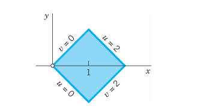
Of particular practical interest are polar coordinates \(r\) and \(\theta\), which can be introduced by setting \(x = r \cos \theta, y = r \sin \theta\). Then \[ J = \frac{\partial(x, y)}{\partial(r, \theta)} = \begin{vmatrix} \cos \theta & -r \sin \theta \\ \sin \theta & r \cos \theta \end{vmatrix} = r \] and \[ \iint_R f(x, y) \, dx \, dy = \iint_{R^*} f(r \cos \theta, r \sin \theta) \, r \, dr \, d\theta \tag{11.31}\] where \(R^*\) is the region in the \(r\theta\)-plane corresponding to \(R\) in the \(xy\)-plane.
11.3.5 EXAMPLE 2 Double Integrals in Polar Coordinates. Center of Gravity. Moments of Inertia
Let \(f(x, y) = 1\) be the mass density in the region in Figure 11.16. Find the total mass, the center of gravity, and the moments of inertia \(I_x, I_y, I_0\).
Solution. We use the polar coordinates just defined and formula (Equation 11.31). This gives the total mass \[ M = \iint_R dx \, dy = \int_{0}^{\pi/2} \int_{0}^{1} r \, dr \, d\theta = \int_{0}^{\pi/2} \frac{1}{2} \, d\theta = \frac{\pi}{4}. \]
The center of gravity has the coordinates \[ \bar{x} = \frac{4}{\pi} \int_{0}^{\pi/2} \int_{0}^{1} r \cos \theta \, r \, dr \, d\theta = \frac{4}{\pi} \int_{0}^{\pi/2} \frac{1}{3} \cos \theta \, d\theta = \frac{4}{3\pi} \approx 0.4244, \] \[ \bar{y} = \frac{4}{3\pi} \quad \text{for reasons of symmetry.} \]
The moments of inertia are \[ I_x = \iint_R y^2 \, dx \, dy = \int_{0}^{\pi/2} \int_{0}^{1} r^2 \sin^2 \theta \, r \, dr \, d\theta = \int_{0}^{\pi/2} \frac{1}{4} \sin^2 \theta \, d\theta \] \[ = \int_{0}^{\pi/2} \frac{1}{8}(1 - \cos 2\theta) \, d\theta = \frac{1}{8} \left( \frac{\pi}{2} - 0 \right) = \frac{\pi}{16} \approx 0.1963. \] \[ I_y = \frac{\pi}{16} \quad \text{for reasons of symmetry,} \quad I_0 = I_x + I_y = \frac{\pi}{8} \approx 0.3927. \] Why are \(\bar{x}\) and \(\bar{y}\) less than 1? \(\square\)
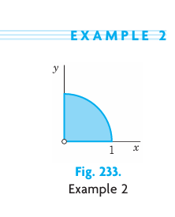
This is the end of our review on double integrals. These integrals will be needed in this chapter, beginning in the next section.
11.3.6 PROBLEM SET 10.3
1. Mean value theorem. Illustrate (Equation 11.25) with an example.
2–8 DOUBLE INTEGRALS
Describe the region of integration and evaluate.
2. \(\int_{0}^{2} \int_{0}^{2x} (x + y)^2 \, dy \, dx\)
3. \(\int_{0}^{3} \int_{-y}^{y} (x^2 + y^2) \, dx \, dy\)
4. Prob. 3, order reversed.
5. \(\int_{0}^{1} \int_{x^2}^{x} (1 - 2xy) \, dy \, dx\)
6. \(\int_{0}^{2} \int_{0}^{y} \sinh (x + y) \, dx \, dy\)
7. Prob. 6, order reversed.
8. \(\int_{0}^{\pi/4} \int_{0}^{\cos y} x^2 \sin y \, dx \, dy\)
9–11 VOLUME
Find the volume of the given region in space.
9. The region beneath \(z = 4x^2 + 9y^2\) and above the rectangle with vertices \((0, 0), (3, 0), (3, 2), (0, 2)\) in the \(xy\)-plane.
10. The first octant region bounded by the coordinate planes and the surfaces \(y = 1 - x^2, z = 1 - x^2\). Sketch it.
11. The region above the \(xy\)-plane and below the paraboloid \(z = 1 - (x^2 + y^2)\).
12–16 CENTER OF GRAVITY
Find the center of gravity \((\bar{x}, \bar{y})\) of a mass of density \(f(x, y) = 1\) in the given region \(R\).
12. Region \(R\) bounded by \(y = h(1 - x/b)\), \(x = 0, y = 0\).
13. Region \(R\) as shown.
14. Region \(R\) as shown.
15. Region \(R\) as shown.
16. Region \(R\) as shown.
17–20 MOMENTS OF INERTIA
Find \(I_x, I_y, I_0\) of a mass of density \(f(x, y) = 1\) in the region \(R\) in the figures, which the engineer is likely to need, along with other profiles listed in engineering handbooks.
17. \(R\) as in Prob. 13.
18. \(R\) as in Prob. 12.
19. \(R\) as shown.
20. \(R\) as shown.
11.4 Green’s Theorem in the Plane
Double integrals over a plane region may be transformed into line integrals over the boundary of the region and conversely. This is of practical interest because it may simplify the evaluation of an integral. It also helps in theoretical work when we want to switch from one kind of integral to the other. The transformation can be done by the following theorem.
11.4.1 THEOREM 1 Green’s Theorem in the Plane3
(Transformation between Double Integrals and Line Integrals)
Let \(R\) be a closed bounded region (see Section 11.3) in the \(xy\)-plane whose boundary \(C\) consists of finitely many smooth curves (see Section 11.1). Let \(F_1(x, y)\) and \(F_2(x, y)\) be functions that are continuous and have continuous partial derivatives \(\partial F_1 / \partial y\) and \(\partial F_2 / \partial x\) everywhere in some domain containing \(R\).4 Then \[
\iint_R \left( \frac{\partial F_2}{\partial x} - \frac{\partial F_1}{\partial y} \right) \, dx \, dy = \oint_C (F_1 \, dx + F_2 \, dy).
\tag{11.32}\]
Here we integrate along the entire boundary \(C\) of \(R\) in such a sense that \(R\) is on the left as we advance in the direction of integration (see Figure 11.24).
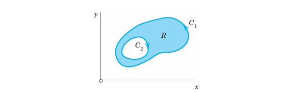
Setting \(\mathbf{F} = [F_1, F_2] = F_1\mathbf{i} + F_2\mathbf{j}\) and using (1) in Section 10.9, we obtain (Equation 11.32) in vectorial form, \[ \iint_R (\operatorname{curl} \mathbf{F}) \cdot \mathbf{k} \, dx \, dy = \oint_C \mathbf{F} \cdot d\mathbf{r}. \tag{11.33}\]
The proof follows after the first example. For \(\oint\) see Section 11.1.
11.4.2 EXAMPLE 1 Verification of Green’s Theorem in the Plane
Green’s theorem in the plane will be quite important in our further work. Before proving it, let us get used to it by verifying it for \(F_1 = y^2 - 7y\), \(F_2 = 2xy + 2x\) and \(C\) the circle \(x^2 + y^2 = 1\).
Solution. In (Equation 11.32) on the left we get \[ \iint_R \left( \frac{\partial F_2}{\partial x} - \frac{\partial F_1}{\partial y} \right) \, dx \, dy = \iint_R [(2y + 2) - (2y - 7)] \, dx \, dy = 9 \iint_R dx \, dy = 9\pi \] since the circular disk \(R\) has area \(\pi\).
We now show that the line integral in (Equation 11.32) on the right gives the same value, \(9\pi\). We must orient \(C\) counterclockwise, say, \(\mathbf{r}(t) = [\cos t, \sin t]\). Then \(\mathbf{r}'(t) = [-\sin t, \cos t]\), and on \(C\), \[ F_1 = y^2 - 7y = \sin^2 t - 7\sin t, \quad F_2 = 2xy + 2x = 2 \cos t \sin t + 2 \cos t. \] Hence the line integral in (Equation 11.32) becomes, verifying Green’s theorem, \[ \oint_C (F_1 x' + F_2 y') \, dt = \int_{0}^{2\pi} [(\sin^2 t - 7\sin t)(-\sin t) + (2\cos t \sin t + 2\cos t)(\cos t)] \, dt \] \[ = \int_{0}^{2\pi} (-\sin^3 t + 7\sin^2 t + 2\cos^2 t \sin t + 2\cos^2 t) \, dt = 0 + 7\pi - 0 + 2\pi = 9\pi. \quad \square \]
Proof. We prove Green’s theorem in the plane, first for a special region \(R\) that can be represented in both forms \[ a \le x \le b, \quad u(x) \le y \le v(x) \quad (\text{see } @fig-10-235) \] and \[ c \le y \le d, \quad p(y) \le x \le q(y) \quad (\text{see } @fig-10-236). \]
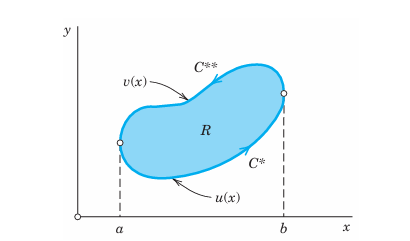
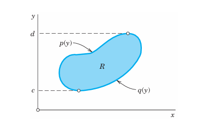
Using (Equation 11.26) in the last section, we obtain for the second term on the left side of (Equation 11.32) taken without the minus sign: \[ \iint_R \frac{\partial F_1}{\partial y} \, dx \, dy = \int_{a}^{b} \left[ \int_{u(x)}^{v(x)} \frac{\partial F_1}{\partial y} \, dy \right] dx \quad (\text{see } @fig-10-235). \tag{11.34}\]
(The first term will be considered later.) We integrate the inner integral: \[ \int_{u(x)}^{v(x)} \frac{\partial F_1}{\partial y} \, dy = \left. F_1(x, y) \right|_{y=u(x)}^{y=v(x)} = F_1[x, v(x)] - F_1[x, u(x)]. \]
By inserting this into (Equation 11.34) we find (changing a direction of integration) \[ \iint_R \frac{\partial F_1}{\partial y} \, dx \, dy = \int_{a}^{b} F_1[x, v(x)] \, dx - \int_{a}^{b} F_1[x, u(x)] \, dx = -\int_{b}^{a} F_1[x, v(x)] \, dx - \int_{a}^{b} F_1[x, u(x)] \, dx. \]
Since \(y = v(x)\) represents the curve \(C^{**}\) (Figure 11.25) and \(y = u(x)\) represents \(C^*\), the last two integrals may be written as line integrals over \(C^{**}\) and \(C^*\) (oriented as in Figure 11.25); therefore, \[ \iint_R \frac{\partial F_1}{\partial y} \, dx \, dy = -\int_{C^{**}} F_1(x, y) \, dx - \int_{C^*} F_1(x, y) \, dx = -\oint_C F_1(x, y) \, dx. \tag{11.35}\]
This proves (Equation 11.32) in Green’s theorem if \(F_2 = 0\).
The result remains valid if \(C\) has portions parallel to the \(y\)-axis (such as \(C_1\) and \(C_2\) in Figure 11.27). Indeed, the integrals over these portions are zero because in (Equation 11.35) on the right we integrate with respect to \(x\). Hence we may add these integrals to the integrals over \(C^*\) and \(C^{**}\) to obtain the integral over the whole boundary \(C\) in (Equation 11.35).
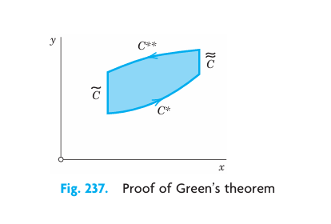
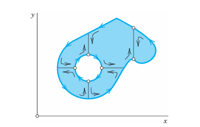
We now treat the first term in (Equation 11.32) on the left in the same way. Instead of (Equation 11.26) in the last section we use (Equation 11.27), and the second representation of the special region (see Figure 11.26). Then (again changing a direction of integration) \[ \iint_R \frac{\partial F_2}{\partial x} \, dx \, dy = \int_{c}^{d} \left[ \int_{p(y)}^{q(y)} \frac{\partial F_2}{\partial x} \, dx \right] dy \] \[ = \int_{c}^{d} F_2(q(y), y) \, dy + \int_{d}^{c} F_2(p(y), y) \, dy = \oint_C F_2(x, y) \, dy. \]
Together with (Equation 11.35) this gives (Equation 11.32) and proves Green’s theorem for special regions.
We now prove the theorem for a region \(R\) that itself is not a special region but can be subdivided into finitely many special regions as shown in Figure 11.28. In this case we apply the theorem to each subregion and then add the results; the left-hand members add up to the integral over \(R\) while the right-hand members add up to the line integral over \(C\) plus integrals over the curves introduced for subdividing \(R\). The simple key observation now is that each of the latter integrals occurs twice, taken once in each direction. Hence they cancel each other, leaving us with the line integral over \(C\).
The proof thus far covers all regions that are of interest in practical problems. To prove the theorem for a most general region \(R\) satisfying the conditions in the theorem, we must approximate \(R\) by a region of the type just considered and then use a limiting process. For details of this see Ref. [GenRef4] in App. 1. \(\blacksquare\)
11.4.3 Some Applications of Green’s Theorem
11.4.4 EXAMPLE 2 Area of a Plane Region as a Line Integral Over the Boundary
In (Equation 11.32) we first choose \(F_1 = 0\), \(F_2 = x\) and then \(F_1 = -y\), \(F_2 = 0\). This gives \[ \iint_R dx \, dy = \oint_C x \, dy \quad \text{and} \quad \iint_R dx \, dy = -\oint_C y \, dx \] respectively. The double integral is the area \(A\) of \(R\). By addition we have \[ A = \frac{1}{2} \oint_C (x \, dy - y \, dx) \tag{11.36}\] where we integrate as indicated in Green’s theorem. This interesting formula expresses the area of \(R\) in terms of a line integral over the boundary. It is used, for instance, in the theory of certain planimeters (mechanical instruments for measuring area). See also Prob. 11.
For an ellipse \(x^2/a^2 + y^2/b^2 = 1\) or \(x = a \cos t, y = b \sin t\) we get \(x' = -a \sin t, y' = b \cos t\); thus from (Equation 11.36) we obtain the familiar formula for the area of the region bounded by an ellipse, \[ A = \frac{1}{2} \int_{0}^{2\pi} (xy' - yx') \, dt = \frac{1}{2} \int_{0}^{2\pi} [ab \cos^2 t - (-ab \sin^2 t)] \, dt = \pi ab. \quad \square \]
11.4.5 EXAMPLE 3 Area of a Plane Region in Polar Coordinates
Let \(r\) and \(\theta\) be polar coordinates defined by \(x = r \cos \theta, y = r \sin \theta\). Then \[ dx = \cos \theta \, dr - r \sin \theta \, d\theta, \quad dy = \sin \theta \, dr + r \cos \theta \, d\theta, \] and (Equation 11.36) becomes a formula that is well known from calculus, namely, \[ A = \frac{1}{2} \oint_C r^2 \, d\theta. \tag{11.37}\]
As an application of (Equation 11.37), we consider the cardioid \(r = a(1 - \cos \theta)\), where \(0 \le \theta \le 2\pi\) (Figure 11.29). We find \[ A = \frac{1}{2} \int_{0}^{2\pi} a^2 (1 - \cos \theta)^2 \, d\theta = \frac{3\pi}{2} a^2. \quad \square \]
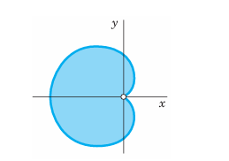
11.4.6 EXAMPLE 4 Transformation of a Double Integral of the Laplacian of a Function into a Line Integral of Its Normal Derivative
The Laplacian plays an important role in physics and engineering. A first impression of this was obtained in Section 10.7, and we shall discuss this further in Chap. 12. At present, let us use Green’s theorem for deriving a basic integral formula involving the Laplacian.
We take a function \(w(x, y)\) that is continuous and has continuous first and second partial derivatives in a domain of the \(xy\)-plane containing a region \(R\) of the type indicated in Green’s theorem. We set \(F_1 = -\partial w / \partial y\) and \(F_2 = \partial w / \partial x\). Then \(\partial F_1 / \partial y\) and \(\partial F_2 / \partial x\) are continuous in \(R\), and in (Equation 11.32) on the left we obtain \[ \frac{\partial F_2}{\partial x} - \frac{\partial F_1}{\partial y} = \frac{\partial^2 w}{\partial x^2} + \frac{\partial^2 w}{\partial y^2} = \nabla^2 w, \tag{11.38}\] the Laplacian of \(w\) (see Section 10.7). Furthermore, using those expressions for \(F_1\) and \(F_2\), we get in (Equation 11.32) on the right \[ \oint_C (F_1 \, dx + F_2 \, dy) = \oint_C \left( F_1 \frac{dx}{ds} + F_2 \frac{dy}{ds} \right) ds = \oint_C \left( -\frac{\partial w}{\partial y} \frac{dx}{ds} + \frac{\partial w}{\partial x} \frac{dy}{ds} \right) ds \tag{11.39}\] where \(s\) is the arc length of \(C\), and \(C\) is oriented as shown in Figure 11.30. The integrand of the last integral may be written as the dot product \[ (\operatorname{grad} w) \cdot \mathbf{n} = \left[ \frac{\partial w}{\partial x}, \, \frac{\partial w}{\partial y} \right] \cdot \left[ \frac{dy}{ds}, \, -\frac{dx}{ds} \right] = \frac{\partial w}{\partial x} \frac{dy}{ds} - \frac{\partial w}{\partial y} \frac{dx}{ds}. \tag{11.40}\]
The vector \(\mathbf{n}\) is a unit normal vector to \(C\), because the vector \(\mathbf{r}'(s) = d\mathbf{r}/ds = [dx/ds, dy/ds]\) is the unit tangent vector of \(C\), and \(\mathbf{r}' \cdot \mathbf{n} = 0\), so that \(\mathbf{n}\) is perpendicular to \(\mathbf{r}'\). Also, \(\mathbf{n}\) is directed to the exterior of \(C\) because in Figure 11.30 the positive \(x\)-component \(dx/ds\) of \(\mathbf{r}'\) is the negative \(y\)-component of \(\mathbf{n}\), and similarly at other points. From this and (4) in Section 10.7 we see that the left side of (Equation 11.40) is the derivative of \(w\) in the direction of the outward normal of \(C\). This derivative is called the normal derivative of \(w\) and is denoted by \(\partial w / \partial n\); that is, \(\partial w / \partial n = (\operatorname{grad} w) \cdot \mathbf{n}\).
Because of (Equation 11.38), (Equation 11.39), and (Equation 11.40), Green’s theorem gives the desired formula relating the Laplacian to the normal derivative, \[ \iint_R \nabla^2 w \, dx \, dy = \oint_C \frac{\partial w}{\partial n} \, ds. \tag{11.41}\]
For instance, \(w = x^2 - y^2\) satisfies Laplace’s equation \(\nabla^2 w = 0\). Hence its normal derivative integrated over a closed curve must give 0. Can you verify this directly by integration, say, for the square \(0 \le x \le 1, 0 \le y \le 1\)? \(\square\)
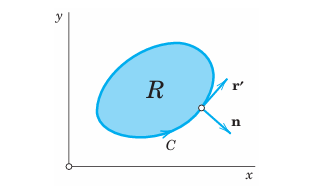
Green’s theorem in the plane can be used in both directions, and thus may aid in the evaluation of a given integral by transforming the given integral into another integral that is easier to solve. This is illustrated further in the problem set. Moreover, and perhaps more fundamentally, Green’s theorem will be the essential tool in the proof of a very important integral theorem, namely, Stokes’s theorem in Section 11.9.
11.4.7 PROBLEM SET 10.4
1–10 LINE INTEGRALS: EVALUATION BY GREEN’S THEOREM
Evaluate \(\oint_C \mathbf{F}(\mathbf{r}) \cdot d\mathbf{r}\) counterclockwise around the boundary \(C\) of the region \(R\) by Green’s theorem, where:
1. \(\mathbf{F} = [y, -x]\), \(C\) the circle \(x^2 + y^2 = 1\).
2. \(\mathbf{F} = [6y^2, 2x - 2y^4]\), \(R\) the square with vertices \((2, 2), (-2, 2), (-2, -2), (2, -2)\).
3. \(\mathbf{F} = [x^2 e^y, y^2 e^x]\), \(R\) the rectangle with vertices \((0, 0), (2, 0), (2, 3), (0, 3)\).
4. \(\mathbf{F} = [x \cosh 2y, 2x^2 \sinh 2y]\), \(R: x^2 \le y \le x\).
5. \(\mathbf{F} = [x^2 + y^2, x^2 - y^2]\), \(R: 1 \le y \le 2 - x^2\).
6. \(\mathbf{F} = [\cosh y, -\sinh x]\), \(R: 1 \le x \le 3\), \(x \le y \le 3x\).
7. \(\mathbf{F} = \operatorname{grad}(x^3 \cos^2(xy))\), \(R\) as in Prob. 5.
8. \(\mathbf{F} = [-e^{-x} \cos y, -e^{-x} \sin y]\), \(R\) the semidisk \(x^2 + y^2 \le 16\), \(x \ge 0\).
9. \(\mathbf{F} = [e^{y/x}, e^{y/x} \ln x + 2x]\), \(R: 1 + x^4 \le y \le 2\).
10. \(\mathbf{F} = [x^2 y^2, -x y^2]\), \(R: 1 \le x^2 + y^2 \le 4\), \(x \ge 0, y \ge x\). Sketch \(R\).
11. CAS EXPERIMENT. Area Computation. Apply (Equation 11.36) to figures of your choice whose area can also be obtained by another method and compare the results.
12. PROJECT. Other Forms of Green’s Theorem in the Plane.
Let \(R\) and \(C\) be as in Green’s theorem, \(\mathbf{r}'\) a unit tangent vector, and \(\mathbf{n}\) the outer unit normal vector of \(C\) (Figure 11.30). Show that (Equation 11.32) may be written as: \[
\iint_R \operatorname{div} \mathbf{F} \, dx \, dy = \oint_C \mathbf{F} \cdot \mathbf{n} \, ds
\tag{11.42}\] or \[
\iint_R (\operatorname{curl} \mathbf{F}) \cdot \mathbf{k} \, dx \, dy = \oint_C \mathbf{F} \cdot \mathbf{r}' \, ds
\tag{11.43}\] where \(\mathbf{k}\) is a unit vector perpendicular to the \(xy\)-plane. Verify (Equation 11.42) and (Equation 11.43) for \(\mathbf{F} = [7x, -3y]\) and \(C\) the circle \(x^2 + y^2 = 4\) as well as for an example of your own choice.
13–17 INTEGRAL OF THE NORMAL DERIVATIVE
Using (Equation 11.41), find the value of \(\oint_C \frac{\partial w}{\partial n} \, ds\) taken counterclockwise over the boundary \(C\) of the region \(R\).
13. \(w = \cosh x\), \(R\) the triangle with vertices \((0, 0), (4, 2), (0, 2)\).
14. \(w = x^2 y + xy^2\), \(R: x^2 + y^2 \le 1, x \ge 0, y \ge 0\).
15. \(w = e^x \cos y + xy^3\), \(R: 1 \le y \le 10 - x^2, x \ge 0\).
16. \(w = x^2 + y^2\), \(C: x^2 + y^2 = 4\). Confirm the answer by direct integration.
17. \(w = x^3 - y^3\), \(0 \le y \le x^2\), \(|x| \le 2\).
18. Laplace’s equation. Show that for a solution \(w(x, y)\) of Laplace’s equation \(\nabla^2 w = 0\) in a region \(R\) with boundary curve \(C\) and outer unit normal vector \(\mathbf{n}\), \[ \iint_R \left[ \left(\frac{\partial w}{\partial x}\right)^2 + \left(\frac{\partial w}{\partial y}\right)^2 \right] \, dx \, dy = \oint_C w \frac{\partial w}{\partial n} \, ds. \tag{11.44}\]
19. Show that \(w = e^x \sin y\) satisfies Laplace’s equation \(\nabla^2 w = 0\) and, using (Equation 11.44), integrate \(w(\partial w/\partial n)\) counterclockwise around the boundary curve \(C\) of the rectangle \(0 \le x \le 2, 0 \le y \le 5\).
20. Same task as in Prob. 19 when \(w = x^2 - y^2\) and \(C\) the boundary curve of the triangle with vertices \((0, 0), (1, 0), (0, 1)\).
11.5 Surfaces for Surface Integrals
Whereas, with line integrals, we integrate over curves in space (Section 11.1, Section 11.2), with surface integrals we integrate over surfaces in space. Each curve in space is represented by a parametric equation (Section 10.5, Section 11.1). This suggests that we should also find parametric representations for the surfaces in space. This is indeed one of the goals of this section. The surfaces considered are cylinders, spheres, cones, and others. The second goal is to learn about surface normals. Both goals prepare us for Section 11.6 on surface integrals. Note that for simplicity, we shall say “surface” also for a portion of a surface.
11.5.1 Representation of Surfaces
Representations of a surface \(S\) in \(xyz\)-space are \[ z = f(x, y) \quad \text{or} \quad g(x, y, z) = 0. \tag{11.45}\]
For example, \(z = \sqrt{a^2 - x^2 - y^2}\) or \(x^2 + y^2 + z^2 - a^2 = 0\) (\(z \ge 0\)) represents a hemisphere of radius \(a\) and center \(0\).
Now for curves \(C\) in line integrals, it was more practical and gave greater flexibility to use a parametric representation \(\mathbf{r} = \mathbf{r}(t)\), where \(a \le t \le b\). This is a mapping of the interval \(a \le t \le b\), located on the \(t\)-axis, onto the curve \(C\) (actually a portion of it) in \(xyz\)-space. It maps every \(t\) in that interval onto the point of \(C\) with position vector \(\mathbf{r}(t)\). See Figure 11.31(a).
Similarly, for surfaces \(S\) in surface integrals, it will often be more practical to use a parametric representation. Surfaces are two-dimensional. Hence we need two parameters, which we call \(u\) and \(v\). Thus a parametric representation of a surface \(S\) in space is of the form \[ \mathbf{r}(u, v) = [x(u, v), \, y(u, v), \, z(u, v)] = x(u, v)\mathbf{i} + y(u, v)\mathbf{j} + z(u, v)\mathbf{k} \tag{11.46}\] where \((u, v)\) varies in some region \(R\) of the \(uv\)-plane. This mapping (Equation 11.46) maps every point \((u, v)\) in \(R\) onto the point of \(S\) with position vector \(\mathbf{r}(u, v)\). See Figure 11.31(b).
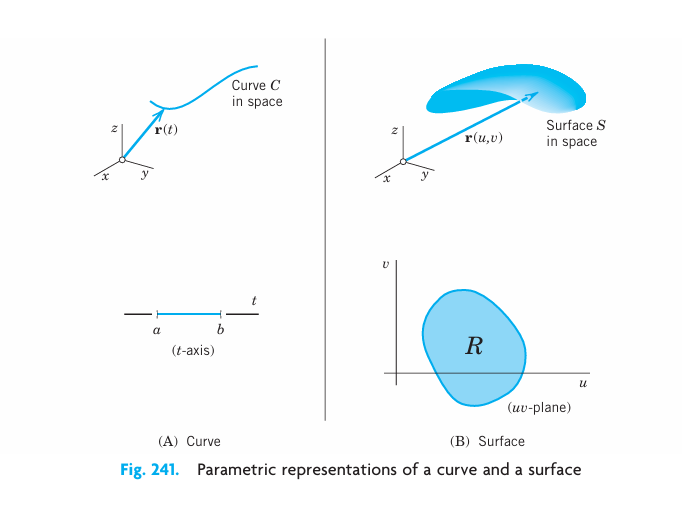
11.5.2 EXAMPLE 1 Parametric Representation of a Cylinder
The circular cylinder \(x^2 + y^2 = a^2\), \(-1 \le z \le 1\), has radius \(a\), height 2, and the \(z\)-axis as axis. A parametric representation is \[ \mathbf{r}(u, v) = [a \cos u, \, a \sin u, \, v] = a \cos u \mathbf{i} + a \sin u \mathbf{j} + v\mathbf{k} \quad (\text{see } @fig-10-242). \] The components of \(\mathbf{r}\) are \(x = a \cos u\), \(y = a \sin u\), \(z = v\). The parameters \(u, v\) vary in the rectangle \(R: 0 \le u \le 2\pi\), \(-1 \le v \le 1\) in the \(uv\)-plane. The curves \(u = \text{const}\) are vertical straight lines. The curves \(v = \text{const}\) are parallel circles. The point \(P\) in Figure 11.32 corresponds to \(u = \pi/3 = 60^\circ\), \(v = 0.7\). \(\square\)
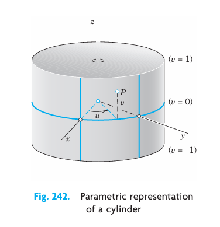
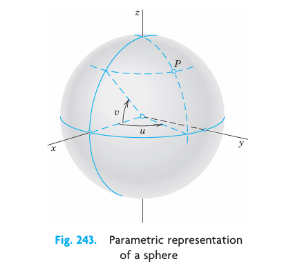
11.5.3 EXAMPLE 2 Parametric Representation of a Sphere
A sphere \(x^2 + y^2 + z^2 = a^2\) can be represented in the form \[ \mathbf{r}(u, v) = a \cos v \cos u \mathbf{i} + a \cos v \sin u \mathbf{j} + a \sin v \mathbf{k} \tag{11.47}\] where the parameters \(u, v\) vary in the rectangle \(R\) in the \(uv\)-plane given by the inequalities \(0 \le u \le 2\pi\), \(-\pi/2 \le v \le \pi/2\). The components of \(\mathbf{r}\) are \[ x = a \cos v \cos u, \quad y = a \cos v \sin u, \quad z = a \sin v. \] The curves \(u = \text{const}\) and \(v = \text{const}\) are the “meridians” and “parallels” on \(S\) (see Figure 11.33). This representation is used in geography for measuring the latitude and longitude of points on the globe.
Another parametric representation of the sphere also used in mathematics is \[ \mathbf{r}(u, v) = a \cos u \sin v \mathbf{i} + a \sin u \sin v \mathbf{j} + a \cos v \mathbf{k} \tag{11.48}\] where \(0 \le u \le 2\pi\), \(0 \le v \le \pi\). \(\square\)
11.5.4 EXAMPLE 3 Parametric Representation of a Cone
A circular cone \(z = \sqrt{x^2 + y^2}\), \(0 \le z \le H\) can be represented by \[ \mathbf{r}(u, v) = [u \cos v, \, u \sin v, \, u] = u \cos v \mathbf{i} + u \sin v \mathbf{j} + u\mathbf{k}, \] in components \(x = u \cos v\), \(y = u \sin v\), \(z = u\). The parameters vary in the rectangle \(R: 0 \le u \le H\), \(0 \le v \le 2\pi\). Check that \(x^2 + y^2 = z^2\), as it should be. What are the curves \(u = \text{const}\) and \(v = \text{const}\)? \(\square\)
11.5.5 Tangent Plane and Surface Normal
Recall from Section 10.7 that the tangent vectors of all the curves on a surface \(S\) through a point \(P\) of \(S\) form a plane, called the tangent plane of \(S\) at \(P\) (Figure 11.34). Exceptions are points where \(S\) has an edge or a cusp (like a cone), so that \(S\) cannot have a tangent plane at such a point. Furthermore, a vector perpendicular to the tangent plane is called a normal vector of \(S\) at \(P\).
Now since \(S\) can be given by \(\mathbf{r} = \mathbf{r}(u, v)\) in (Equation 11.46), the new idea is that we get a curve \(C\) on \(S\) by taking a pair of differentiable functions \[ u = u(t), \quad v = v(t) \] whose derivatives \(u' = du/dt\) and \(v' = dv/dt\) are continuous. Then \(C\) has the position vector \(\mathbf{r}(t) = \mathbf{r}(u(t), v(t))\). By differentiation and the use of the chain rule (Section 10.6) we obtain a tangent vector of \(C\) on \(S\): \[ \mathbf{r}'(t) = \frac{d\mathbf{r}}{dt} = \frac{\partial\mathbf{r}}{\partial u} u' + \frac{\partial\mathbf{r}}{\partial v} v'. \]
Hence the partial derivatives \(\mathbf{r}_u\) and \(\mathbf{r}_v\) at \(P\) are tangential to \(S\) at \(P\). We assume that they are linearly independent, which geometrically means that the curves \(u = \text{const}\) and \(v = \text{const}\) on \(S\) intersect at \(P\) at a nonzero angle. Then \(\mathbf{r}_u\) and \(\mathbf{r}_v\) span the tangent plane of \(S\) at \(P\). Hence their cross product gives a normal vector \(\mathbf{N}\) of \(S\) at \(P\): \[ \mathbf{N} = \mathbf{r}_u \times \mathbf{r}_v \neq \mathbf{0}. \tag{11.49}\]
The corresponding unit normal vector \(\mathbf{n}\) of \(S\) at \(P\) is (Figure 11.34) \[ \mathbf{n} = \frac{1}{|\mathbf{N}|} \mathbf{N} = \frac{1}{|\mathbf{r}_u \times \mathbf{r}_v|} (\mathbf{r}_u \times \mathbf{r}_v). \tag{11.50}\]
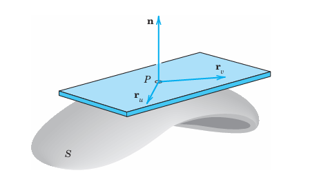
Also, if \(S\) is represented by \(g(x, y, z) = 0\), then, by Theorem 2 in Section 10.7, \[ \mathbf{n} = \frac{1}{|\operatorname{grad} g|} \operatorname{grad} g. \tag{11.51}\]
A surface \(S\) is called a smooth surface if its surface normal depends continuously on the points of \(S\). S is called piecewise smooth if it consists of finitely many smooth portions. For instance, a sphere is smooth, and the surface of a cube is piecewise smooth (explain!). We can now summarize our discussion as follows.
11.5.6 THEOREM 1 Tangent Plane and Surface Normal
If a surface \(S\) is given by (Equation 11.46) with continuous \(\mathbf{r}_u = \partial\mathbf{r}/\partial u\) and \(\mathbf{r}_v = \partial\mathbf{r}/\partial v\) satisfying (Equation 11.49) at every point of \(S\), then \(S\) has, at every point \(P\), a unique tangent plane passing through \(P\) and spanned by \(\mathbf{r}_u\) and \(\mathbf{r}_v\), and a unique normal whose direction depends continuously on the points of \(S\). A normal vector is given by (Equation 11.49) and the corresponding unit normal vector by (Equation 11.50). (See Figure 11.34.)
11.5.7 EXAMPLE 4 Unit Normal Vector of a Sphere
From (Equation 11.51) we find that the sphere \(g(x, y, z) = x^2 + y^2 + z^2 - a^2 = 0\) has the unit normal vector \[ \mathbf{n}(x, y, z) = \left[ \frac{x}{a}, \, \frac{y}{a}, \, \frac{z}{a} \right] = \frac{x}{a}\mathbf{i} + \frac{y}{a}\mathbf{j} + \frac{z}{a}\mathbf{k}. \] We see that \(\mathbf{n}\) has the direction of the position vector \([x, y, z]\) of the corresponding point. Is it obvious that this must be the case? \(\square\)
11.5.8 EXAMPLE 5 Unit Normal Vector of a Cone
At the apex of the cone \(g(x, y, z) = -z + \sqrt{x^2 + y^2} = 0\) in Example 3, the unit normal vector \(\mathbf{n}\) becomes undetermined because from (Equation 11.51) we get \[ \mathbf{n} = \left[ \frac{x}{\sqrt{2(x^2 + y^2)}}, \, \frac{y}{\sqrt{2(x^2 + y^2)}}, \, -\frac{1}{\sqrt{2}} \right] = \frac{1}{\sqrt{2}} \left( \frac{x}{\sqrt{x^2 + y^2}}\mathbf{i} + \frac{y}{\sqrt{x^2 + y^2}}\mathbf{j} - \mathbf{k} \right). \quad \square \]
We are now ready to discuss surface integrals and their applications, beginning in the next section.
11.5.9 PROBLEM SET 10.5
1–8 PARAMETRIC SURFACE REPRESENTATION
Familiarize yourself with parametric representations of important surfaces by deriving a representation (Equation 11.45), by finding the parameter curves (curves \(u = \text{const}\) and \(v = \text{const}\)) of the surface and a normal vector \(\mathbf{N} = \mathbf{r}_u \times \mathbf{r}_v\) of the surface. Show the details of your work.
1. \(xy\)-plane: \(\mathbf{r}(u, v) = [u, v, 0]\) (thus \(u\mathbf{i} + v\mathbf{j}\); similarly in Probs. 2–8).
2. \(xy\)-plane in polar coordinates: \(\mathbf{r}(u, v) = [u \cos v, u \sin v, 0]\) (thus \(u = r, v = \theta\)).
3. Cone: \(\mathbf{r}(u, v) = [u \cos v, u \sin v, cu]\).
4. Elliptic cylinder: \(\mathbf{r}(u, v) = [a \cos v, b \sin v, u]\).
5. Paraboloid of revolution: \(\mathbf{r}(u, v) = [u \cos v, u \sin v, u^2]\).
6. Helicoid: \(\mathbf{r}(u, v) = [u \cos v, u \sin v, v]\). Explain the name.
7. Ellipsoid: \(\mathbf{r}(u, v) = [a \cos v \cos u, b \cos v \sin u, c \sin v]\).
8. Hyperbolic paraboloid: \(\mathbf{r}(u, v) = [au \cosh v, bu \sinh v, u^2]\).
9. CAS EXPERIMENT. Graphing Surfaces, Dependence on \(a, b, c\). Graph the surfaces in Probs. 3–8. In Prob. 6 generalize the surface by introducing parameters \(a, b\). Then find out in Probs. 4 and 6–8 how the shape of the surfaces depends on \(a, b, c\).
10. Orthogonal parameter curves \(u = \text{const}\) and \(v = \text{const}\) on \(\mathbf{r}(u, v)\) occur if and only if \(\mathbf{r}_u \cdot \mathbf{r}_v = 0\). Give examples. Prove it.
11. Satisfying (4). Represent the paraboloid in Prob. 5 so that \(\mathbf{N}(0, 0) \neq \mathbf{0}\) and show \(\mathbf{N}\).
12. Condition (4). Find the points in Probs. 1–8 at which \(\mathbf{N} \neq \mathbf{0}\) does not hold. Indicate whether this results from the shape of the surface or from the choice of the representation.
13. Representation \(z = f(x, y)\). Show that \(z = f(x, y)\) or \(g = z - f(x, y) = 0\) can be written as: \[ \mathbf{r}(u, v) = [u, \, v, \, f(u, v)], \quad \mathbf{N} = [-f_u, \, -f_v, \, 1], \quad \mathbf{n} = \frac{[-f_u, \, -f_v, \, 1]}{\sqrt{f_u^2 + f_v^2 + 1}}. \tag{11.52}\]
14–19 DERIVE A PARAMETRIC REPRESENTATION
Find a normal vector. The answer gives one representation; there are many. Sketch the surface and parameter curves.
14. Plane \(4x + 3y + 2z = 12\).
15. Cylinder of revolution \((x-2)^2 + (y+1)^2 = 25\).
16. Ellipsoid \(x^2 + y^2 + \frac{1}{9}z^2 = 1\).
17. Sphere \(x^2 + (y+2.8)^2 + (z-3.2)^2 = 2.25\).
18. Elliptic cone \(z = \sqrt{2x^2 + 4y^2}\).
19. Hyperbolic cylinder \(x^2 - y^2 = 1\).
20. PROJECT. Tangent Planes. Tangent planes \(T(P)\) will be less important in our work, but you should know how to represent them.
(a) If \(S: \mathbf{r}(u, v)\), then \(T(P): (\mathbf{r}^* - \mathbf{r}) \cdot (\mathbf{r}_u \times \mathbf{r}_v) = 0\) (a scalar triple product) or \(\mathbf{r}^*(p, q) = \mathbf{r}(P) + p\mathbf{r}_u(P) + q\mathbf{r}_v(P)\).
(b) If \(S: g(x, y, z) = 0\), then \(T(P): (\mathbf{r}^* - \mathbf{r}(P)) \cdot \operatorname{grad} g = 0\).
(c) If \(S: z = f(x, y)\), then \(T(P): z^* - z = (x^* - x)f_x(P) + (y^* - y)f_y(P)\).
Interpret geometrically. Give two examples for (a), two for (b), and two for (c).
11.6 Surface Integrals
To define a surface integral, we take a surface \(S\), given by a parametric representation as just discussed, \[ \mathbf{r}(u, v) = [x(u, v), \, y(u, v), \, z(u, v)] = x(u, v)\mathbf{i} + y(u, v)\mathbf{j} + z(u, v)\mathbf{k} \tag{11.53}\] where \((u, v)\) varies over a region \(R\) in the \(uv\)-plane. We assume \(S\) to be piecewise smooth (Section 11.5), so that \(S\) has a normal vector \[ \mathbf{N} = \mathbf{r}_u \times \mathbf{r}_v \quad \text{and unit normal vector} \quad \mathbf{n} = \frac{1}{|\mathbf{N}|} \mathbf{N} \tag{11.54}\] at every point (except perhaps for some edges or cusps, as for a cube or cone). For a given vector function \(\mathbf{F}\) we can now define the surface integral over \(S\) by \[ \iint_S \mathbf{F} \cdot \mathbf{n} \, dA = \iint_R \mathbf{F}(\mathbf{r}(u, v)) \cdot \mathbf{N}(u, v) \, du \, dv. \tag{11.55}\]
Here \(\mathbf{N} = |\mathbf{N}|\mathbf{n}\) by (Equation 11.54), and \(|\mathbf{N}| = |\mathbf{r}_u \times \mathbf{r}_v|\) is the area of the parallelogram with sides \(\mathbf{r}_u\) and \(\mathbf{r}_v\), by the definition of cross product. Hence \[ \mathbf{n} \, dA = \mathbf{n} |\mathbf{N}| \, du \, dv = \mathbf{N} \, du \, dv. \tag{11.56}\] And we see that \(dA = |\mathbf{N}| \, du \, dv\) is the element of area of \(S\).
Also \(\mathbf{F} \cdot \mathbf{n}\) is the normal component of \(\mathbf{F}\). This integral arises naturally in flow problems, where it gives the flux across \(S\) when \(\mathbf{F} = \rho \mathbf{v}\). Recall, from Section 10.8, that the flux across \(S\) is the mass of fluid crossing \(S\) per unit time. Furthermore, \(\rho\) is the density of the fluid and \(\mathbf{v}\) the velocity vector of the flow, as illustrated by Example 1 below. We may thus call the surface integral (Equation 11.55) the flux integral.
We can write (Equation 11.55) in components, using \(\mathbf{F} = [F_1, F_2, F_3]\), \(\mathbf{N} = [N_1, N_2, N_3]\), and \(\mathbf{n} = [\cos \alpha, \cos \beta, \cos \gamma]\). Here, \(\alpha, \beta, \gamma\) are the angles between \(\mathbf{n}\) and the coordinate axes; indeed, for the angle between \(\mathbf{n}\) and \(\mathbf{i}\), formula (4) in Section 10.2 gives \(\cos \alpha = \mathbf{n} \cdot \mathbf{i} / (|\mathbf{n}||\mathbf{i}|) = \mathbf{n} \cdot \mathbf{i}\), and so on. We thus obtain from (Equation 11.55): \[ \iint_S \mathbf{F} \cdot \mathbf{n} \, dA = \iint_S (F_1 \cos \alpha + F_2 \cos \beta + F_3 \cos \gamma) \, dA \] \[ = \iint_R (F_1 N_1 + F_2 N_2 + F_3 N_3) \, du \, dv. \tag{11.57}\]
In (Equation 11.57) we can write \(\cos \alpha \, dA = dy \, dz\), \(\cos \beta \, dA = dz \, dx\), \(\cos \gamma \, dA = dx \, dy\). Then (Equation 11.57) becomes the following integral for the flux: \[ \iint_S \mathbf{F} \cdot \mathbf{n} \, dA = \iint_S (F_1 \, dy \, dz + F_2 \, dz \, dx + F_3 \, dx \, dy). \tag{11.58}\]
We can use this formula to evaluate surface integrals by converting them to double integrals over regions in the coordinate planes of the \(xyz\)-coordinate system. But we must carefully take into account the orientation of \(S\) (the choice of \(\mathbf{n}\)). We explain this for the integrals of the \(F_3\)-terms, \[ \iint_S F_3 \cos \gamma \, dA = \iint_S F_3 \, dx \, dy. \tag{11.59}\]
If the surface \(S\) is given by \(z = h(x, y)\) with \((x, y)\) varying in a region \(R\) in the \(xy\)-plane, and if \(S\) is oriented so that \(\cos \gamma \ge 0\), then (Equation 11.59) gives \[ \iint_S F_3 \cos \gamma \, dA = \iint_R F_3(x, y, h(x, y)) \, dx \, dy. \tag{11.60}\]
But if \(\cos \gamma < 0\), the integral on the right of (Equation 11.60) gets a minus sign in front. This follows if we note that the element of area \(dx \, dy\) in the \(xy\)-plane is the projection \(|\cos \gamma| \, dA\) of the element of area \(dA\) of \(S\); and we have \(\cos \gamma = +|\cos \gamma|\) when \(\cos \gamma \ge 0\), but \(\cos \gamma = -|\cos \gamma|\) when \(\cos \gamma < 0\). Similarly for the other two terms in (Equation 11.58). At the same time, this justifies the notations in (Equation 11.58).
Other forms of surface integrals will be discussed later in this section.
11.6.1 EXAMPLE 1 Flux Through a Surface
Compute the flux of water through the parabolic cylinder \(S: y = x^2\), \(0 \le x \le 2\), \(0 \le z \le 3\) (Figure 11.35) if the velocity vector is \(\mathbf{v} = \mathbf{F} = [3z^2, 6, 6xz]\), speed being measured in meters/sec. (Generally, \(\mathbf{F} = \rho \mathbf{v}\), but water has the density \(\rho = 1\text{ g/cm}^3 = 1\text{ ton/m}^3\).)
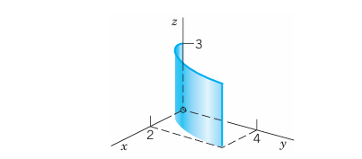
Solution. Writing \(x = u\) and \(z = v\), we have \(y = x^2 = u^2\). Hence a representation of \(S\) is \[ S: \mathbf{r} = [u, \, u^2, \, v] \quad (0 \le u \le 2, \, 0 \le v \le 3). \] By differentiation and by the definition of the cross product, \[ \mathbf{N} = \mathbf{r}_u \times \mathbf{r}_v = [1, \, 2u, \, 0] \times [0, \, 0, \, 1] = [2u, \, -1, \, 0]. \] On \(S\), writing simply \(\mathbf{F}(S)\) for \(\mathbf{F}[\mathbf{r}(u, v)]\), we have \(\mathbf{F}(S) = [3v^2, 6, 6uv]\). Hence \(\mathbf{F}(S) \cdot \mathbf{N} = 6uv^2 - 6\). By integration we thus get from (Equation 11.55) the flux: \[ \iint_S \mathbf{F} \cdot \mathbf{n} \, dA = \int_{0}^{3} \int_{0}^{2} (6uv^2 - 6) \, du \, dv = \int_{0}^{3} \left. (3u^2 v^2 - 6u) \right|_{u=0}^2 \, dv \] \[ = \int_{0}^{3} (12v^2 - 12) \, dv = \left. (4v^3 - 12v) \right|_0^3 = 108 - 36 = 72\text{ m}^3/\text{sec} \] or 72,000 liters/sec. Note that the \(y\)-component of \(\mathbf{F}\) is positive (equal to 6), so that in Figure 11.35 the flow goes from left to right.
Let us confirm this result by (Equation 11.58). Since \[ \mathbf{N} = |\mathbf{N}|\mathbf{n} = [2x, \, -1, \, 0], \] we see that \(\cos \alpha \ge 0, \cos \beta < 0\), and \(\cos \gamma = 0\). Hence the second term of (Equation 11.58) on the right gets a minus sign, and the last term is absent. This gives, in agreement with the previous result, \[ \iint_S \mathbf{F} \cdot \mathbf{n} \, dA = \int_{0}^{3} \int_{0}^{4} 3z^2 \, dy \, dz - \int_{0}^{2} \int_{0}^{3} 6 \, dz \, dx = \int_{0}^{3} 12z^2 \, dz - \int_{0}^{2} 18 \, dx = 4 \cdot 3^3 - 18 \cdot 2 = 72. \quad \square \]
11.6.2 EXAMPLE 2 Surface Integral
Evaluate (Equation 11.55) when \(\mathbf{F} = [x^2, 0, 3y^2]\) and \(S\) is the portion of the plane \(x + y + z = 1\) in the first octant (Figure 11.36).
Solution. Writing \(x = u\) and \(y = v\), we have \(z = 1 - x - y = 1 - u - v\). Hence we can represent the plane \(x + y + z = 1\) in the form \(\mathbf{r}(u, v) = [u, v, 1 - u - v]\). We obtain the first-octant portion \(S\) of this plane by restricting \(x = u\) and \(y = v\) to the projection \(R\) of \(S\) in the \(xy\)-plane. \(R\) is the triangle bounded by the two coordinate axes and the straight line \(x + y = 1\), obtained from \(x + y + z = 1\) by setting \(z = 0\). Thus \[ 0 \le x \le 1 - y, \quad 0 \le y \le 1. \]
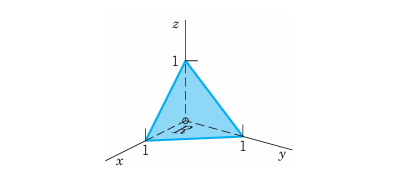
By inspection or by differentiation, \[ \mathbf{N} = \mathbf{r}_u \times \mathbf{r}_v = [1, \, 0, \, -1] \times [0, \, 1, \, -1] = [1, \, 1, \, 1]. \] Hence \(\mathbf{F}(S) \cdot \mathbf{N} = [u^2, 0, 3v^2] \cdot [1, 1, 1] = u^2 + 3v^2\). By (Equation 11.55), \[ \iint_S \mathbf{F} \cdot \mathbf{n} \, dA = \iint_R (u^2 + 3v^2) \, du \, dv = \int_{0}^{1} \int_{0}^{1-v} (u^2 + 3v^2) \, du \, dv \] \[ = \int_{0}^{1} \left[ \frac{(1-v)^3}{3} + 3v^2(1-v) \right] \, dv = \frac{1}{3}. \quad \square \]
11.6.3 Orientation of Surfaces
From (Equation 11.55) or (Equation 11.57) we see that the value of the integral depends on the choice of the unit normal vector \(\mathbf{n}\). (Instead of \(\mathbf{n}\) we could choose \(-\mathbf{n}\).) We express this by saying that such an integral is an integral over an oriented surface \(S\), that is, over a surface \(S\) on which we have chosen one of the two possible unit normal vectors in a continuous fashion. (For a piecewise smooth surface, this needs some further discussion, which we give below.)
If we change the orientation of \(S\), this means that we replace \(\mathbf{n}\) with \(-\mathbf{n}\). Then each component of \(\mathbf{n}\) in (Equation 11.57) is multiplied by \(-1\), so that we have:
11.6.4 THEOREM 1 Change of Orientation in a Surface Integral
The replacement of \(\mathbf{n}\) by \(-\mathbf{n}\) (hence of \(\mathbf{N}\) by \(-\mathbf{N}\)) corresponds to the multiplication of the integral in (Equation 11.55) or (Equation 11.57) by \(-1\).
In practice, how do we make such a change of \(\mathbf{N}\) happen, if \(S\) is given in the form (Equation 11.53)? The easiest way is to interchange \(u\) and \(v\), because then \(\mathbf{r}_u\) becomes \(\mathbf{r}_v\) and conversely, so that \(\mathbf{N} = \mathbf{r}_u \times \mathbf{r}_v\) becomes \(\mathbf{r}_v \times \mathbf{r}_u = -(\mathbf{r}_u \times \mathbf{r}_v) = -\mathbf{N}\), as wanted. Let us illustrate this.
11.6.5 EXAMPLE 3 Change of Orientation in a Surface Integral
In Example 1 we now represent \(S\) by \(\tilde{\mathbf{r}} = [v, v^2, u]\), \(0 \le v \le 2\), \(0 \le u \le 3\). Then \[ \tilde{\mathbf{N}} = \tilde{\mathbf{r}}_u \times \tilde{\mathbf{r}}_v = [0, 0, 1] \times [1, 2v, 0] = [-2v, 1, 0]. \] For \(\mathbf{F} = [3z^2, 6, 6xz]\) we now get \(\tilde{\mathbf{F}}(S) = [3u^2, 6, 6uv]\). Hence \(\tilde{\mathbf{F}}(S) \cdot \tilde{\mathbf{N}} = -6u^2v + 6\) and integration gives the old result times \(-1\), \[ \iint_{R^*} \tilde{\mathbf{F}}(S) \cdot \tilde{\mathbf{N}} \, dv \, du = \int_{0}^{3} \int_{0}^{2} (-6u^2 v + 6) \, dv \, du = \int_{0}^{3} (-12u^2 + 12) \, du = -72. \quad \square \]
11.6.6 Orientation of Smooth Surfaces
A smooth surface \(S\) (see Section 11.5) is called orientable if the positive normal direction, when given at an arbitrary point \(P_0\) of \(S\), can be continued in a unique and continuous way to the entire surface. In many practical applications, the surfaces are smooth and thus orientable.
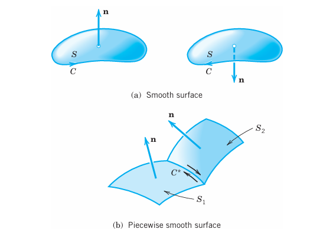
11.6.7 Orientation of Piecewise Smooth Surfaces
Here the following idea will do it. For a smooth orientable surface \(S\) with boundary curve \(C\) we may associate with each of the two possible orientations of \(S\) an orientation of \(C\), as shown in Figure 11.37(a). Then a piecewise smooth surface is called orientable if we can orient each smooth piece of \(S\) so that along each curve \(C^*\) which is a common boundary of two pieces \(S_1\) and \(S_2\) the positive direction of \(C^*\) relative to \(S_1\) is opposite to the direction of \(C^*\) relative to \(S_2\). See Figure 11.37(b) for two adjacent pieces; note the arrows along \(C^*\).
11.6.8 Theory: Nonorientable Surfaces
A sufficiently small piece of a smooth surface is always orientable. This may not hold for entire surfaces. A well-known example is the Möbius strip,5 shown in Figure 11.38. To make a model, take the rectangular paper in Figure 11.38, make a half-twist, and join the short sides together so that \(A\) goes onto \(A\), and \(B\) onto \(B\). At \(P_0\) take a normal vector pointing, say, to the left. Displace it along \(C\) to the right (in the lower part of the figure) around the strip until you return to \(P_0\) and see that you get a normal vector pointing to the right, opposite to the given one. See also Prob. 17.
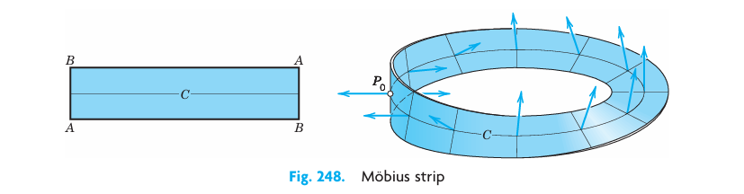
11.6.9 Surface Integrals Without Regard to Orientation
Another type of surface integral is \[ \iint_S G(\mathbf{r}) \, dA = \iint_R G(\mathbf{r}(u, v)) |\mathbf{N}(u, v)| \, du \, dv. \tag{11.61}\]
Here \(dA = |\mathbf{N}| \, du \, dv = |\mathbf{r}_u \times \mathbf{r}_v| \, du \, dv\) is the element of area of the surface \(S\) represented by (Equation 11.53) and we disregard the orientation.
We shall need later (in Section 11.9) the mean value theorem for surface integrals, which states that if \(R\) in (Equation 11.61) is simply connected (see Section 11.2) and \(G(\mathbf{r})\) is continuous in a domain containing \(R\), then there is a point \((u_0, v_0)\) in \(R\) such that \[ \iint_S G(\mathbf{r}) \, dA = G(\mathbf{r}(u_0, v_0)) A \quad (A = \text{Area of } S). \tag{11.62}\]
As for applications, if \(G(\mathbf{r})\) is the mass density of \(S\), then (Equation 11.61) is the total mass of \(S\). If \(G = 1\), then (Equation 11.61) gives the area \(A(S)\) of \(S\), \[ A(S) = \iint_S dA = \iint_R |\mathbf{r}_u \times \mathbf{r}_v| \, du \, dv. \tag{11.63}\]
Examples 4 and 5 show how to apply (Equation 11.63) to a sphere and a torus. The final example, Example 6, explains how to calculate moments of inertia for a surface.
11.6.10 EXAMPLE 4 Area of a Sphere
For a sphere \(\mathbf{r}(u, v) = [a \cos v \cos u, a \cos v \sin u, a \sin v]\), \(0 \le u \le 2\pi\), \(-\pi/2 \le v \le \pi/2\) see (3) in 11.5, we obtain by direct calculation (verify!): \[ \mathbf{r}_u \times \mathbf{r}_v = [a^2 \cos^2 v \cos u, \, a^2 \cos^2 v \sin u, \, a^2 \cos v \sin v]. \] Using \(\cos^2 u + \sin^2 u = 1\) and then \(\cos^2 v + \sin^2 v = 1\), we obtain \[ |\mathbf{r}_u \times \mathbf{r}_v| = a^2 (\cos^4 v \cos^2 u + \cos^4 v \sin^2 u + \cos^2 v \sin^2 v)^{1/2} = a^2 |\cos v|. \] With this, (Equation 11.63) gives the familiar formula (note that \(|\cos v| = \cos v\) when \(-\pi/2 \le v \le \pi/2\)) \[ A(S) = a^2 \int_{-\pi/2}^{\pi/2} \int_{0}^{2\pi} |\cos v| \, du \, dv = 2\pi a^2 \int_{-\pi/2}^{\pi/2} \cos v \, dv = 4\pi a^2. \quad \square \]
11.6.11 EXAMPLE 5 Torus Surface (Doughnut Surface): Representation and Area
A torus surface \(S\) is obtained by rotating a circle \(C\) about a straight line \(L\) in space so that \(C\) does not intersect or touch \(L\) but its plane always passes through \(L\). If \(L\) is the \(z\)-axis and \(C\) has radius \(b\) and its center has distance \(a\) (\(> b\)) from \(L\), as in Figure 11.39, then \(S\) can be represented by \[ \mathbf{r}(u, v) = (a + b \cos v) \cos u \mathbf{i} + (a + b \cos v) \sin u \mathbf{j} + b \sin v \mathbf{k} \] where \(0 \le u \le 2\pi, 0 \le v \le 2\pi\). Thus \[ \mathbf{r}_u = -(a + b \cos v) \sin u \mathbf{i} + (a + b \cos v) \cos u \mathbf{j} \] \[ \mathbf{r}_v = -b \sin v \cos u \mathbf{i} - b \sin v \sin u \mathbf{j} + b \cos v \mathbf{k} \] \[ \mathbf{r}_u \times \mathbf{r}_v = b(a + b \cos v)(\cos u \cos v \mathbf{i} + \sin u \cos v \mathbf{j} + \sin v \mathbf{k}). \] Hence \(|\mathbf{r}_u \times \mathbf{r}_v| = b(a + b \cos v)\), and (Equation 11.63) gives the total area of the torus: \[ A(S) = \int_{0}^{2\pi} \int_{0}^{2\pi} b(a + b \cos v) \, du \, dv = 4\pi^2 ab. \quad \square \tag{11.64}\]
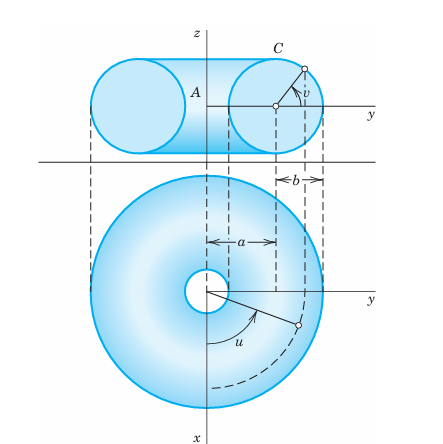
11.6.12 EXAMPLE 6 Moment of Inertia of a Surface
Find the moment of inertia \(I\) of a spherical lamina \(S: x^2 + y^2 + z^2 = a^2\) of constant mass density and total mass \(M\) about the \(z\)-axis.
Solution. If a mass is distributed over a surface \(S\) and \(\sigma(x, y, z)\) is the density of the mass (= mass per unit area), then the moment of inertia \(I\) of the mass with respect to a given axis \(L\) is defined by the surface integral \[ I = \iint_S \sigma D^2 \, dA \tag{11.65}\] where \(D(x, y, z)\) is the distance of the point \((x, y, z)\) from \(L\). Since, in the present example, \(\sigma\) is constant and \(S\) has the area \(A = 4\pi a^2\), we have \(\sigma = M/A = M / (4\pi a^2)\).
For \(S\) we use the same representation as in Example 4. Then \(D^2 = x^2 + y^2 = a^2 \cos^2 v\). Also, as in that example, \(dA = a^2 \cos v \, du \, dv\). This gives the following result. [In the integration, use \(\cos^3 v = \cos v (1 - \sin^2 v)\).] \[ I = \iint_S \sigma D^2 \, dA = \frac{M}{4\pi a^2} \int_{-\pi/2}^{\pi/2} \int_{0}^{2\pi} a^4 \cos^3 v \, du \, dv = M a^2 \int_{-\pi/2}^{\pi/2} \cos^3 v \, dv = \frac{2}{3} Ma^2. \quad \square \]
11.6.13 Representations \(z = f(x, y)\)
If a surface \(S\) is given by \(z = f(x, y)\), then setting \(u = x\), \(v = y\), \(\mathbf{r} = [u, v, f]\) gives \[ |\mathbf{N}| = |\mathbf{r}_u \times \mathbf{r}_v| = |[1, \, 0, \, f_u] \times [0, \, 1, \, f_v]| = |[-f_u, \, -f_v, \, 1]| = \sqrt{1 + f_u^2 + f_v^2} \] and, since \(f_u = f_x\), \(f_v = f_y\), formula (Equation 11.61) becomes \[ \iint_S G(\mathbf{r}) \, dA = \iint_{R^*} G(x, y, f(x, y)) \sqrt{1 + \left( \frac{\partial f}{\partial x} \right)^2 + \left( \frac{\partial f}{\partial y} \right)^2} \, dx \, dy. \tag{11.66}\]
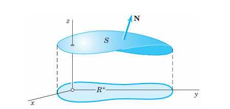
Here \(R^*\) is the projection of \(S\) into the \(xy\)-plane (Figure 11.40) and the normal vector \(\mathbf{N}\) on \(S\) points up. If it points down, the integral on the right is preceded by a minus sign.
From (Equation 11.66) with \(G = 1\) we obtain for the area \(A(S)\) of \(S: z = f(x, y)\) the formula \[ A(S) = \iint_{R^*} \sqrt{1 + \left( \frac{\partial f}{\partial x} \right)^2 + \left( \frac{\partial f}{\partial y} \right)^2} \, dx \, dy \tag{11.67}\] where \(R^*\) is the projection of \(S\) into the \(xy\)-plane, as before.
11.6.14 PROBLEM SET 10.6
1–10 FLUX INTEGRALS
Evaluate \(\iint_S \mathbf{F} \cdot \mathbf{n} \, dA\) for the given data. Describe the kind of surface. Show the details of your work.
1. \(\mathbf{F} = [-x^2, y^2, 0]\), \(S: \mathbf{r} = [u, v, 3u - 2v]\), \(0 \le u \le 1.5, -2 \le v \le 2\).
2. \(\mathbf{F} = [e^y, e^x, 1]\), \(S: x + y + z = 1, x \ge 0, y \ge 0, z \ge 0\).
3. \(\mathbf{F} = [0, x, 0]\), \(S: x^2 + y^2 + z^2 = 1, x \ge 0, y \ge 0, z \ge 0\).
4. \(\mathbf{F} = [e^y, -e^z, e^x]\), \(S: x^2 + y^2 = 25, x \ge 0, y \ge 0, 0 \le z \le 2\).
5. \(\mathbf{F} = [x, y, z]\), \(S: \mathbf{r} = [u \cos v, u \sin v, u^2]\), \(0 \le u \le 4, -\pi \le v \le \pi\).
6. \(\mathbf{F} = [\cosh y, 0, \sinh x]\), \(S: z = x + y^2, 0 \le y \le x, 0 \le x \le 1\).
7. \(\mathbf{F} = [0, \sin y, \cos z]\), \(S\) the cylinder \(x = y^2\), where \(0 \le y \le \pi/4\) and \(0 \le z \le y\).
8. \(\mathbf{F} = [\tan xy, x, y]\), \(S: y^2 + z^2 = 1, 2 \le x \le 5, y \ge 0, z \ge 0\).
9. \(\mathbf{F} = [0, \sinh z, \cosh x]\), \(S: x^2 + z^2 = 4, 0 \le x \le 1/\sqrt{2}, 0 \le y \le 5, z \ge 0\).
10. \(\mathbf{F} = [y^2, x^2, z^4]\), \(S: z = 4\sqrt{x^2 + y^2}, 0 \le z \le 8, y \ge 0\).
11. CAS EXPERIMENT. Flux Integral. Write a program for evaluating surface integrals (Equation 11.55) that prints intermediate results (\(\mathbf{F}, \mathbf{F} \cdot \mathbf{N}\), the integral over one of the two variables). Can you obtain experimentally some rules on functions and surfaces giving integrals that can be evaluated by the usual methods of calculus? Make a list of positive and negative results.
12–16 SURFACE INTEGRALS
Evaluate \(\iint_S G(\mathbf{r}) \, dA\) for the following data. Indicate the kind of surface. Show the details.
12. \(G = \cos x + \sin x\), \(S\) the portion of \(x + y + z = 1\) in the first octant.
13. \(G = x + y + z\), \(z = x + 2y, 0 \le x \le \pi, 0 \le y \le x\).
14. \(G = ax + by + cz\), \(S: x^2 + y^2 + z^2 = 1, y \ge 0, z \ge 0\).
15. \(G = (1 + 9xz)^{3/2}\), \(S: \mathbf{r} = [u, v, u^3], 0 \le u \le 1, -2 \le v \le 2\).
16. \(G = \arctan(y/x)\), \(S: z = x^2 + y^2, 1 \le z \le 9, x \ge 0, y \ge 0\).
17. Fun with Möbius. Make Möbius strips from long slim rectangles \(R\) of grid paper (graph paper) by pasting the short sides together after giving the paper a half-twist. In each case count the number of parts obtained by cutting along lines parallel to the edge.
(a) Make \(R\) three squares wide and cut until you reach the beginning.
(b) Make \(R\) four squares wide. Begin cutting one square away from the edge until you reach the beginning. Then cut the portion that is still two squares wide.
(c) Make \(R\) five squares wide and cut similarly.
(d) Make \(R\) six squares wide and cut. Formulate a conjecture about the number of parts obtained.
18. Gauss “Double Ring” (See Möbius, Works 2, 518–559). Make a paper cross (Figure 11.41) into a “double ring” by joining opposite arms along their outer edges (without twist), one ring below the plane of the cross and the other above. Show experimentally that one can choose any four boundary points \(A, B, C, D\) and join \(A\) and \(C\) as well as \(B\) and \(D\) by two nonintersecting curves. What happens if you cut along the two curves? If you make a half-twist in each of the two rings and then cut?6
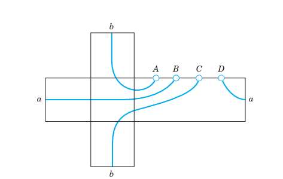
11.6.15 APPLICATIONS
19. Center of gravity. Justify the following formulas for the mass \(M\) and the center of gravity \((\bar{x}, \bar{y}, \bar{z})\) of a lamina \(S\) of density (mass per unit area) \(\sigma(x, y, z)\) in space: \[ M = \iint_S \sigma \, dA, \quad \bar{x} = \frac{1}{M} \iint_S x \sigma \, dA, \quad \bar{y} = \frac{1}{M} \iint_S y \sigma \, dA, \quad \bar{z} = \frac{1}{M} \iint_S z \sigma \, dA. \]
20. Moments of inertia. Justify the following formulas for the moments of inertia of the lamina in Prob. 19 about the \(x\)-, \(y\)-, and \(z\)-axes, respectively: \[ I_x = \iint_S (y^2 + z^2)\sigma \, dA, \quad I_y = \iint_S (x^2 + z^2)\sigma \, dA, \quad I_z = \iint_S (x^2 + y^2)\sigma \, dA. \]
21. Find a formula for the moment of inertia of the lamina in Prob. 20 about the line \(y = x\), \(z = 0\).
22–23 Find the moment of inertia of a lamina \(S\) of density 1 about an axis \(B\), where:
22. \(S: x^2 + y^2 = 1, 0 \le z \le h\), \(B\): the line \(z = h/2\) in the \(xz\)-plane.
23. \(S: x^2 + y^2 = z^2, 0 \le z \le h\), \(B\): the \(z\)-axis.
24. Steiner’s theorem. If \(I_B\) is the moment of inertia of a mass distribution of total mass \(M\) with respect to a line \(B\) through the center of gravity, show that its moment of inertia \(I_K\) with respect to a line \(K\), which is parallel to \(B\) and has the distance \(k\) from it is \[ I_K = I_B + k^2 M. \]
25. Using Steiner’s theorem, find the moment of inertia of a mass of density 1 on the sphere \(S: x^2 + y^2 + z^2 = 1\) about the line \(K: x = 1, y = 0\) from the moment of inertia of the mass about a suitable line \(B\), which you must first calculate.
26. TEAM PROJECT. First Fundamental Form of \(S\).
Given a surface \(S: \mathbf{r}(u, v)\), the differential form \[
ds^2 = E \, du^2 + 2F \, du \, dv + G \, dv^2
\tag{11.68}\] with coefficients (in standard notation, unrelated to \(\mathbf{F}, \mathbf{G}\) elsewhere in this chapter) \[
E = \mathbf{r}_u \cdot \mathbf{r}_u, \quad F = \mathbf{r}_u \cdot \mathbf{r}_v, \quad G = \mathbf{r}_v \cdot \mathbf{r}_v
\tag{11.69}\] is called the first fundamental form of \(S\). This form is basic because it permits us to calculate lengths, angles, and areas on \(S\). To show this, prove (a)–(c):
(a) For a curve \(C: u = u(t), v = v(t), a \le t \le b\), on \(S\), formulas (10), Section 10.5, and (Equation 11.69) give the length: \[
l = \int_{a}^{b} \sqrt{\mathbf{r}'(t) \cdot \mathbf{r}'(t)} \, dt = \int_{a}^{b} \sqrt{E (u')^2 + 2F u' v' + G (v')^2} \, dt.
\tag{11.70}\] (b) The angle \(\gamma\) between two intersecting curves \(C_1: u = g(t), v = h(t)\) and \(C_2: u = p(t), v = q(t)\) on \(S: \mathbf{r}(u, v)\) is obtained from \[
\cos \gamma = \frac{\mathbf{a} \cdot \mathbf{b}}{|\mathbf{a}||\mathbf{b}|}
\tag{11.71}\] where \(\mathbf{a} = \mathbf{r}_u g' + \mathbf{r}_v h'\) and \(\mathbf{b} = \mathbf{r}_u p' + \mathbf{r}_v q'\) are tangent vectors of \(C_1\) and \(C_2\).
11.7 Triple Integrals. Divergence Theorem of Gauss
In this section we discuss another “big” integral theorem, the divergence theorem, which transforms surface integrals into triple integrals. So let us begin with a review of the latter.
A triple integral is an integral of a function \(f(x, y, z)\) taken over a closed bounded, three-dimensional region \(T\) in space. (Note that “closed” and “bounded” are defined in the same way as in footnote 2 of Section 11.3, with “sphere” substituted for “circle”). We subdivide \(T\) by planes parallel to the coordinate planes. Then we consider those boxes of the subdivision that lie entirely inside \(T\), and number them from 1 to \(n\). Here each box consists of a rectangular parallelepiped. In each such box we choose an arbitrary point, say, \((x_k, y_k, z_k)\) in box \(k\). The volume of box \(k\) we denote by \(\Delta V_k\). We now form the sum \[ J_n = \sum_{k=1}^n f(x_k, y_k, z_k) \Delta V_k. \]
This we do for larger and larger positive integers \(n\) arbitrarily but so that the maximum length of all the edges of those \(n\) boxes approaches zero as \(n\) approaches infinity. This gives a sequence of real numbers \(J_{n_1}, J_{n_2}, \dots\). We assume that \(f(x, y, z)\) is continuous in a domain containing \(T\), and \(T\) is bounded by finitely many smooth surfaces (see Section 11.5). Then it can be shown (see Ref. [GenRef4] in App. 1) that the sequence converges to a limit that is independent of the choice of subdivisions and corresponding points \((x_k, y_k, z_k)\). This limit is called the triple integral of \(f(x, y, z)\) over the region \(T\) and is denoted by \[ \iiint_T f(x, y, z) \, dx \, dy \, dz \quad \text{or by} \quad \iiint_T f(x, y, z) \, dV. \]
Triple integrals can be evaluated by three successive integrations. This is similar to the evaluation of double integrals by two successive integrations, as discussed in Section 11.3. Example 1 below explains this.
11.7.1 Divergence Theorem of Gauss7
Triple integrals can be transformed into surface integrals over the boundary surface of a region in space and conversely. Such a transformation is of practical interest because one of the two kinds of integral is often simpler than the other. It also helps in establishing fundamental equations in fluid flow, heat conduction, etc., as we shall see. The transformation is done by the divergence theorem, which involves the divergence of a vector function \(\mathbf{F} = [F_1, F_2, F_3] = F_1\mathbf{i} + F_2\mathbf{j} + F_3\mathbf{k}\), namely, \[ \operatorname{div} \mathbf{F} = \frac{\partial F_1}{\partial x} + \frac{\partial F_2}{\partial y} + \frac{\partial F_3}{\partial z} \quad (\text{@sec-divergence-vector-field}). \tag{11.72}\]
11.7.2 THEOREM 1 Divergence Theorem of Gauss
(Transformation Between Triple and Surface Integrals)
Let \(T\) be a closed bounded region in space whose boundary is a piecewise smooth orientable surface \(S\). Let \(\mathbf{F}(x, y, z)\) be a vector function that is continuous and has continuous first partial derivatives in some domain containing \(T\). Then \[
\iiint_T \operatorname{div} \mathbf{F} \, dV = \iint_S \mathbf{F} \cdot \mathbf{n} \, dA.
\tag{11.73}\]
In components of \(\mathbf{F} = [F_1, F_2, F_3]\) and of the outer unit normal vector \(\mathbf{n} = [\cos \alpha, \cos \beta, \cos \gamma]\) of \(S\) (as in Figure 11.43), formula (Equation 11.73) becomes: \[ \iiint_T \left( \frac{\partial F_1}{\partial x} + \frac{\partial F_2}{\partial y} + \frac{\partial F_3}{\partial z} \right) \, dx \, dy \, dz = \iint_S (F_1 \cos \alpha + F_2 \cos \beta + F_3 \cos \gamma) \, dA \tag{11.74}\] \[ = \iint_S (F_1 \, dy \, dz + F_2 \, dz \, dx + F_3 \, dx \, dy). \]
“Closed bounded region” is explained above, “piecewise smooth orientable” in Section 11.5, and “domain containing \(T\)” in footnote 4, Section 11.4, for the two-dimensional case.
Before we prove the theorem, let us show a standard application.
11.7.3 EXAMPLE 1 Evaluation of a Surface Integral by the Divergence Theorem
Evaluate \[ I = \iint_S (x^3 \, dy \, dz + x^2 y \, dz \, dx + x^2 z \, dx \, dy) \] where \(S\) is the closed surface in Figure 11.42 consisting of the cylinder \(x^2 + y^2 = a^2\) (\(0 \le z \le b\)) and the circular disks \(z = 0\) and \(z = b\) (\(x^2 + y^2 \le a^2\)).
Solution. \(F_1 = x^3, F_2 = x^2 y, F_3 = x^2 z\). Hence \(\operatorname{div} \mathbf{F} = 3x^2 + x^2 + x^2 = 5x^2\). The shape of the surface suggests that we introduce polar coordinates \(r, \theta\) defined by \(x = r \cos \theta, y = r \sin \theta\) (thus cylindrical coordinates \(r, \theta, z\)). Then the volume element is \(dx \, dy \, dz = r \, dr \, d\theta \, dz\), and we obtain: \[ I = \iiint_T 5x^2 \, dx \, dy \, dz = \int_{0}^{b} \int_{0}^{2\pi} \int_{0}^{a} (5r^2 \cos^2 \theta) \, r \, dr \, d\theta \, dz \] \[ = 5 \int_{0}^{b} \int_{0}^{2\pi} \frac{a^4}{4} \cos^2 \theta \, d\theta \, dz = 5 \int_{0}^{b} \frac{a^4 \pi}{4} \, dz = \frac{5\pi}{4} a^4 b. \quad \square \]
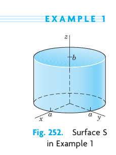
Proof. We prove the divergence theorem, beginning with the first equation in (Equation 11.74). This equation is true if and only if the integrals of each component on both sides are equal; that is, \[ \iiint_T \frac{\partial F_1}{\partial x} \, dx \, dy \, dz = \iint_S F_1 \cos \alpha \, dA, \tag{11.75}\] \[ \iiint_T \frac{\partial F_2}{\partial y} \, dx \, dy \, dz = \iint_S F_2 \cos \beta \, dA, \tag{11.76}\] \[ \iiint_T \frac{\partial F_3}{\partial z} \, dx \, dy \, dz = \iint_S F_3 \cos \gamma \, dA. \tag{11.77}\]
We first prove (Equation 11.77) for a special region \(T\) that is bounded by a piecewise smooth orientable surface \(S\) and has the property that any straight line parallel to any one of the coordinate axes and intersecting \(T\) has at most one segment (or a single point) in common with \(T\). This implies that \(T\) can be represented in the form \[ g(x, y) \le z \le h(x, y) \tag{11.78}\] where \((x, y)\) varies in the orthogonal projection \(R\) of \(T\) in the \(xy\)-plane. Clearly, \(z = g(x, y)\) represents the “bottom” \(S_2\) of \(S\) (Figure 11.43), whereas \(z = h(x, y)\) represents the “top” \(S_1\) of \(S\), and there may be a remaining vertical portion \(S_3\) of \(S\). (The portion \(S_3\) may degenerate into a curve, as for a sphere.)
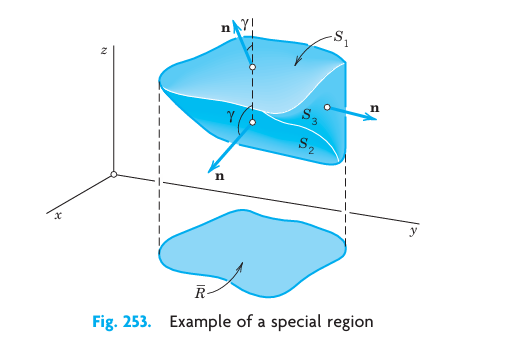
To prove (Equation 11.77), we use (Equation 11.78). Since \(\mathbf{F}\) is continuously differentiable in some domain containing \(T\), we have: \[ \iiint_T \frac{\partial F_3}{\partial z} \, dx \, dy \, dz = \iint_R \left[ \int_{g(x, y)}^{h(x, y)} \frac{\partial F_3}{\partial z} \, dz \right] dx \, dy. \tag{11.79}\]
Integration of the inner integral gives \(F_3[x, y, h(x, y)] - F_3[x, y, g(x, y)]\). Hence the triple integral in (Equation 11.79) equals \[ \iint_R F_3[x, y, h(x, y)] \, dx \, dy - \iint_R F_3[x, y, g(x, y)] \, dx \, dy. \tag{11.80}\]
But the same result is also obtained by evaluating the right side of (Equation 11.77); that is, \[ \iint_S F_3 \cos \gamma \, dA = \iint_S F_3 \, dx \, dy = \iint_{S_1} F_3 \, dx \, dy + \iint_{S_2} F_3 \, dx \, dy + \iint_{S_3} F_3 \, dx \, dy \] \[ = \iint_R F_3[x, y, h(x, y)] \, dx \, dy - \iint_R F_3[x, y, g(x, y)] \, dx \, dy \] where the first integral over \(R\) gets a plus sign because \(\cos \gamma \ge 0\) on \(S_1\) in Figure 11.43, and the second integral gets a minus sign because \(\cos \gamma < 0\) on \(S_2\). The integral over the vertical portion \(S_3\) is zero because \(\cos \gamma = 0\) on \(S_3\). This proves (Equation 11.77).
The relations (Equation 11.75) and (Equation 11.76) now follow by merely relabeling the variables and using the fact that, by assumption, \(T\) has representations similar to (Equation 11.78), namely, \[ g(y, z) \le x \le h(y, z) \quad \text{and} \quad g(z, x) \le y \le h(z, x). \]
This proves the first equation in (Equation 11.74) for special regions. It implies (Equation 11.73) because the left side of (Equation 11.74) is just the definition of the divergence, and the right sides of (Equation 11.73) and of the first equation in (Equation 11.74) are equal. Finally, equality of the right sides of (Equation 11.73) and (Equation 11.74), last line, is seen from (Equation 11.58) in the last section. This establishes the divergence theorem for special regions.
For any region \(T\) that can be subdivided into finitely many special regions by means of auxiliary surfaces, the theorem follows by adding the result for each part separately. This procedure is analogous to that in the proof of Green’s theorem in Section 11.4. The surface integrals over the auxiliary surfaces cancel in pairs, and the sum of the remaining surface integrals is the surface integral over the whole boundary surface \(S\) of \(T\); the triple integrals over the parts of \(T\) add up to the triple integral over \(T\).
The divergence theorem is now proved for any bounded region that is of interest in practical problems. The extension to a most general region \(T\) of the type indicated in the theorem would require a certain limit process; this is similar to the situation in the case of Green’s theorem in Section 11.4. \(\blacksquare\)
11.7.4 EXAMPLE 2 Verification of the Divergence Theorem
Evaluate \(\iint_S (7x\mathbf{i} - z\mathbf{k}) \cdot \mathbf{n} \, dA\) over the sphere \(S: x^2 + y^2 + z^2 = 4\)
(a) by (Equation 11.73),
(b) directly.
Solution.
(a) \(\operatorname{div} \mathbf{F} = \operatorname{div} [7x, 0, -z] = 7 - 1 = 6\). Answer: \(6 \times \left( \frac{4}{3} \pi 2^3 \right) = 64\pi\).
(b) We can represent \(S\) by (Equation 11.47) (with \(a=2\)), and we shall use \(\mathbf{n} \, dA = \mathbf{N} \, du \, dv\) (see Section 11.6). Accordingly, \[
S: \mathbf{r} = [2 \cos v \cos u, \, 2 \cos v \sin u, \, 2 \sin v] \quad (0 \le u \le 2\pi, \, -\pi/2 \le v \le \pi/2).
\] Then \[
\mathbf{r}_u = [-2 \cos v \sin u, \, 2 \cos v \cos u, \, 0],
\] \[
\mathbf{r}_v = [-2 \sin v \cos u, \, -2 \sin v \sin u, \, 2 \cos v],
\] \[
\mathbf{N} = \mathbf{r}_u \times \mathbf{r}_v = [4 \cos^2 v \cos u, \, 4 \cos^2 v \sin u, \, 4 \cos v \sin v].
\] Now on \(S\) we have \(x = 2 \cos v \cos u\), \(z = 2 \sin v\), so that \(\mathbf{F} = [7x, 0, -z]\) becomes on \(S\): \[
\mathbf{F}(S) = [14 \cos v \cos u, \, 0, \, -2 \sin v]
\] and \[
\mathbf{F}(S) \cdot \mathbf{N} = (14 \cos v \cos u)(4 \cos^2 v \cos u) + (-2 \sin v)(4 \cos v \sin v) = 56 \cos^3 v \cos^2 u - 8 \cos v \sin^2 v.
\] On \(S\) we have to integrate over \(u\) from 0 to \(2\pi\). Since \(\int_0^{2\pi} \cos^2 u \, du = \pi\) and \(\int_0^{2\pi} 1 \, du = 2\pi\), this integration gives: \[
\pi \cdot 56 \cos^3 v - 2\pi \cdot 8 \cos v \sin^2 v = 56\pi \cos^3 v - 16\pi \cos v \sin^2 v.
\] The integral of \(\cos v \sin^2 v\) equals \((\sin^3 v)/3\), and that of \(\cos^3 v = \cos v (1 - \sin^2 v)\) equals \(\sin v - (\sin^3 v)/3\). On \(S\) we have \(-\pi/2 \le v \le \pi/2\), so that by substituting these limits we get: \[
56\pi \left( 2 - \frac{2}{3} \right) - 16\pi \left( \frac{2}{3} \right) = 56\pi \left( \frac{4}{3} \right) - \frac{32\pi}{3} = \frac{192\pi}{3} = 64\pi. \quad \square
\] To see the point of Gauss’s theorem, compare the amounts of work.
11.7.5 Coordinate Invariance of the Divergence
The divergence (Equation 11.72) is defined in terms of coordinates, but we can use the divergence theorem to show that \(\operatorname{div} \mathbf{F}\) has a meaning independent of coordinates.
For this purpose we first note that triple integrals have properties quite similar to those of double integrals in Section 11.3. In particular, the mean value theorem for triple integrals asserts that for any continuous function \(f(x, y, z)\) in a bounded and simply connected region \(T\) there is a point \(Q:(x_0, y_0, z_0)\) in \(T\) such that \[ \iiint_T f(x, y, z) \, dV = f(x_0, y_0, z_0) V(T) \quad (V(T) = \text{volume of } T). \tag{11.81}\]
In this formula we interchange the two sides, divide by \(V(T)\), and set \(f = \operatorname{div} \mathbf{F}\). Then by the divergence theorem we obtain for the divergence an integral over the boundary surface \(S(T)\) of \(T\): \[ \operatorname{div} \mathbf{F}(x_0, y_0, z_0) = \frac{1}{V(T)} \iiint_T \operatorname{div} \mathbf{F} \, dV = \frac{1}{V(T)} \iint_{S(T)} \mathbf{F} \cdot \mathbf{n} \, dA. \tag{11.82}\]
We now choose a point \(P:(x_1, y_1, z_1)\) in \(T\) and let \(T\) shrink down onto \(P\) so that the maximum distance \(d(T)\) of the points of \(T\) from \(P\) goes to zero. Then \(Q:(x_0, y_0, z_0)\) must approach \(P\). Hence (Equation 11.82) becomes \[ \operatorname{div} \mathbf{F}(P) = \lim_{d(T) \to 0} \frac{1}{V(T)} \iint_{S(T)} \mathbf{F} \cdot \mathbf{n} \, dA. \tag{11.83}\]
This proves:
11.7.6 THEOREM 2 Invariance of the Divergence
The divergence of a vector function \(\mathbf{F}\) with continuous first partial derivatives in a region \(T\) is independent of the particular choice of Cartesian coordinates. For any \(P\) in \(T\) it is given by (Equation 11.83).
Equation (Equation 11.83) is sometimes used as a definition of the divergence. Then the representation (Equation 11.72) in Cartesian coordinates can be derived from (Equation 11.83).
11.7.7 PROBLEM SET 10.7
1–8 APPLICATION: MASS DISTRIBUTION
Find the total mass of a mass distribution of density \(\sigma\) in a region \(T\) in space.
1. \(\sigma = x^2 + y^2 + z^2\), \(T\) the box \(|x| \le 4, |y| \le 1, 0 \le z \le 2\).
2. \(\sigma = xyz\), \(T\) the box \(0 \le x \le a, 0 \le y \le b, 0 \le z \le c\).
3. \(\sigma = e^{-x-y-z}\), \(T: 0 \le x \le 1-y, 0 \le y \le 1, 0 \le z \le 2\).
4. \(\sigma\) as in Prob. 3, \(T\) the tetrahedron with vertices \((0, 0, 0), (3, 0, 0), (0, 3, 0), (0, 0, 3)\).
5. \(\sigma = \sin 2x \cos 2y\), \(T: 0 \le x \le \pi/4, \pi/4 - x \le y \le \pi/4, 0 \le z \le 6\).
6. \(\sigma = x^2 y^2 z^2\), \(T\) the cylindrical region \(x^2 + z^2 \le 16, |y| \le 4\).
7. \(\sigma = \arctan(y/x)\), \(T: x^2 + y^2 + z^2 \le a^2, z \ge 0\).
8. \(\sigma = x^2 + y^2\), \(T\) as in Prob. 7.
9–18 APPLICATION OF THE DIVERGENCE THEOREM
Evaluate the surface integral \(\iint_S \mathbf{F} \cdot \mathbf{n} \, dA\) by the divergence theorem. Show the details.
9. \(\mathbf{F} = [x^2, 0, z^2]\), \(S\) the surface of the box \(|x| \le 1, |y| \le 3, 0 \le z \le 2\).
10. Solve Prob. 9 by direct integration.
11. \(\mathbf{F} = [e^x, e^y, e^z]\), \(S\) the surface of the cube \(|x| \le 1, |y| \le 1, |z| \le 1\).
12. \(\mathbf{F} = [x^3 - y^3, y^3 - z^3, z^3 - x^3]\), \(S\) the surface of \(x^2 + y^2 + z^2 \le 25, z \ge 0\).
13. \(\mathbf{F} = [\sin y, \cos x, \cos z]\), \(S\) the surface of \(x^2 + y^2 \le 4, |z| \le 2\) (a cylinder and two disks!).
14. \(\mathbf{F}\) as in Prob. 13, \(S\) the surface of \(x^2 + y^2 \le 9, 0 \le z \le 2\).
15. \(\mathbf{F} = [2x^2, \frac{1}{2}y^2, \sin \pi z]\), \(S\) the surface of the tetrahedron with vertices \((0, 0, 0), (1, 0, 0), (0, 1, 0), (0, 0, 1)\).
16. \(\mathbf{F} = [\cosh x, z, y]\), \(S\) as in Prob. 15.
17. \(\mathbf{F} = [x^2, y^2, z^2]\), \(S\) the surface of the cone \(x^2 + y^2 \le z^2, 0 \le z \le h\).
18. \(\mathbf{F} = [xy, yz, zx]\), \(S\) the surface of the cone \(x^2 + y^2 \le 4z^2, 0 \le z \le 2\).
19–23 APPLICATION: MOMENT OF INERTIA
Given a mass of density 1 in a region \(T\) of space, find the moment of inertia about the \(x\)-axis: \[
I_x = \iiint_T (y^2 + z^2) \, dx \, dy \, dz.
\]
19. The box \(-a \le x \le a, -b \le y \le b, -c \le z \le c\).
20. The ball \(x^2 + y^2 + z^2 \le a^2\).
21. The cylinder \(y^2 + z^2 \le a^2, 0 \le x \le h\).
22. The paraboloid \(y^2 + z^2 \le x, 0 \le x \le h\).
23. The cone \(y^2 + z^2 \le x^2, 0 \le x \le h\).
24. Why is \(I_x\) in Prob. 23 for large \(h\) larger than \(I_x\) in Prob. 22 (and the same \(h\))? Why is it smaller for \(h < 1\)? Give a physical reason.
25. Show that for a solid of revolution, \(I_x = \frac{\pi}{2} \int_{0}^{h} r^4(x) \, dx\). Solve Probs. 20–23 by this formula.
11.8 Further Applications of the Divergence Theorem
The divergence theorem has many important applications: In fluid flow, it helps characterize sources and sinks of fluids. In heat flow, it leads to the heat equation. In potential theory, it gives properties of the solutions of Laplace’s equation. In this section, we assume that the region \(T\) and its boundary surface \(S\) are such that the divergence theorem applies.
11.8.1 Physical Interpretation of the Divergence
From the divergence theorem we may obtain an intuitive interpretation of the divergence of a vector. For this purpose we consider the flow of an incompressible fluid (see Section 10.8) of constant density \(\rho = 1\) which is steady, that is, does not vary with time. Such a flow is determined by the field of its velocity vector \(\mathbf{v}(P)\) at any point \(P\).
Let \(S\) be the boundary surface of a region \(T\) in space, and let \(\mathbf{n}\) be the outer unit normal vector of \(S\). Then \(\mathbf{v} \cdot \mathbf{n}\) is the normal component of \(\mathbf{v}\) in the direction of \(\mathbf{n}\), and \(|\mathbf{v} \cdot \mathbf{n}| \, dA\) is the mass of fluid leaving \(T\) (if \(\mathbf{v} \cdot \mathbf{n} \ge 0\) at some \(P\)) or entering \(T\) (if \(\mathbf{v} \cdot \mathbf{n} < 0\) at \(P\)) per unit time through a small portion \(\Delta S\) of \(S\) of area \(\Delta A\). Hence the total mass of fluid that flows across \(S\) from \(T\) to the outside per unit time is given by the surface integral: \[ \iint_S \mathbf{v} \cdot \mathbf{n} \, dA. \]
Division by the volume \(V\) of \(T\) gives the average flow out of \(T\): \[ \frac{1}{V} \iint_S \mathbf{v} \cdot \mathbf{n} \, dA. \tag{11.84}\]
Since the flow is steady and the fluid is incompressible, the amount of fluid flowing outward must be continuously supplied. Hence, if the value of the integral (Equation 11.84) is different from zero, there must be sources (positive sources and negative sources, called sinks) in \(T\), that is, points where fluid is produced or disappears.
If we let \(T\) shrink down to a fixed point \(P\) in \(T\), we obtain from (Equation 11.84) the source intensity at \(P\) given by the right side of (Equation 11.83) in the last section with \(\mathbf{F} \cdot \mathbf{n}\) replaced by \(\mathbf{v} \cdot \mathbf{n}\), that is, \[ \operatorname{div} \mathbf{v}(P) = \lim_{d(T) \to 0} \frac{1}{V(T)} \iint_{S(T)} \mathbf{v} \cdot \mathbf{n} \, dA. \tag{11.85}\]
Hence the divergence of the velocity vector \(\mathbf{v}\) of a steady incompressible flow is the source intensity of the flow at the corresponding point.
There are no sources in \(T\) if and only if \(\operatorname{div} \mathbf{v}\) is zero everywhere in \(T\). Then for any closed surface \(S\) in \(T\) we have \[ \iint_S \mathbf{v} \cdot \mathbf{n} \, dA = 0. \quad \square \]
11.8.2 EXAMPLE 1 Modeling of Heat Flow. Heat or Diffusion Equation
Physical experiments show that in a body, heat flows in the direction of decreasing temperature, and the rate of flow is proportional to the gradient of the temperature. This means that the velocity \(\mathbf{v}\) of the heat flow in a body is of the form: \[ \mathbf{v} = -K \operatorname{grad} U \tag{11.86}\] where \(U(x, y, z, t)\) is temperature, \(t\) is time, and \(K\) is called the thermal conductivity of the body; in ordinary physical circumstances \(K\) is a constant. Using this information, set up the mathematical model of heat flow, the so-called heat equation or diffusion equation.
Solution. Let \(T\) be a region in the body bounded by a surface \(S\) with outer unit normal vector \(\mathbf{n}\) such that the divergence theorem applies. Then \(\mathbf{v} \cdot \mathbf{n}\) is the component of \(\mathbf{v}\) in the direction of \(\mathbf{n}\), and the amount of heat leaving \(T\) per unit time is: \[ \iint_S \mathbf{v} \cdot \mathbf{n} \, dA. \]
This expression is obtained similarly to the corresponding surface integral in the physical interpretation. Using: \[ \operatorname{div}(\operatorname{grad} U) = \nabla^2 U = U_{xx} + U_{yy} + U_{zz} \] (the Laplacian; see (3) in Section 10.8), we have by the divergence theorem and (Equation 11.86): \[ \iint_S \mathbf{v} \cdot \mathbf{n} \, dA = \iiint_T \operatorname{div}(-K \operatorname{grad} U) \, dx \, dy \, dz = -K \iiint_T \nabla^2 U \, dx \, dy \, dz. \tag{11.87}\]
On the other hand, the total amount of heat \(H\) in \(T\) is: \[ H = \iiint_T s \rho U \, dx \, dy \, dz \] where the constant \(s\) is the specific heat of the material of the body and \(\rho\) is the density (= mass per unit volume) of the material. Hence the time rate of decrease of \(H\) is: \[ -\frac{\partial H}{\partial t} = -\iiint_T s \rho \frac{\partial U}{\partial t} \, dx \, dy \, dz, \] and this must be equal to the above amount of heat leaving \(T\). From (Equation 11.87) we thus have: \[ -\iiint_T s \rho \frac{\partial U}{\partial t} \, dx \, dy \, dz = -K \iiint_T \nabla^2 U \, dx \, dy \, dz \] or \[ \iiint_T \left( s \rho \frac{\partial U}{\partial t} - K \nabla^2 U \right) \, dx \, dy \, dz = 0. \]
Since this holds for any region \(T\) in the body, the integrand (if continuous) must be zero everywhere; that is, \[ \frac{\partial U}{\partial t} = c^2 \nabla^2 U, \quad c^2 = \frac{K}{s \rho} \tag{11.88}\] where \(c^2\) is called the thermal diffusivity of the material. This partial differential equation is called the heat equation. It is the fundamental equation for heat conduction. And our derivation is another impressive demonstration of the great importance of the divergence theorem. Methods for solving heat problems will be shown in Chap. 12.
The heat equation is also called the diffusion equation because it also models diffusion processes of motions of molecules tending to level off differences in density or pressure in gases or liquids.
If heat flow does not depend on time, it is called steady-state heat flow. Then \(\partial U / \partial t = 0\), so that (Equation 11.88) reduces to Laplace’s equation \(\nabla^2 U = 0\). We met this equation in Section 10.7 and Section 10.8, and we shall now see that the divergence theorem adds basic insights into the nature of solutions of this equation. \(\square\)
11.8.3 Potential Theory. Harmonic Functions
The theory of solutions of Laplace’s equation \[ \nabla^2 f = \frac{\partial^2 f}{\partial x^2} + \frac{\partial^2 f}{\partial y^2} + \frac{\partial^2 f}{\partial z^2} = 0 \tag{11.89}\] is called potential theory. A solution of (Equation 11.89) with continuous second-order partial derivatives is called a harmonic function. That continuity is needed for application of the divergence theorem in potential theory, where the theorem plays a key role that we want to explore. Further details of potential theory follow in Chaps. 12 and 18.
11.8.4 EXAMPLE 2 A Basic Property of Solutions of Laplace’s Equation
The integrands in the divergence theorem are \(\operatorname{div} \mathbf{F}\) and \(\mathbf{F} \cdot \mathbf{n}\) (Section 11.7). If \(\mathbf{F}\) is the gradient of a scalar function, say, \(\mathbf{F} = \operatorname{grad} f\), then \(\operatorname{div} \mathbf{F} = \operatorname{div}(\operatorname{grad} f) = \nabla^2 f\); see (3), Section 10.8. Also, \(\mathbf{F} \cdot \mathbf{n} = \mathbf{n} \cdot \mathbf{F} = \mathbf{n} \cdot \operatorname{grad} f\). This is the directional derivative of \(f\) in the outer normal direction of \(S\), the boundary surface of the region \(T\) in the theorem. This derivative is called the (outer) normal derivative of \(f\) and is denoted by \(\partial f / \partial n\). Thus the formula in the divergence theorem becomes: \[ \iiint_T \nabla^2 f \, dV = \iint_S \frac{\partial f}{\partial n} \, dA. \tag{11.90}\]
This is the three-dimensional analog of (9) in Section 11.4. Because of the assumptions in the divergence theorem this gives the following result.
11.8.5 THEOREM 1 A Basic Property of Harmonic Functions
Let \(f(x, y, z)\) be a harmonic function in some domain \(D\) in space. Let \(S\) be any piecewise smooth closed orientable surface in \(D\) whose entire region \(T\) it encloses belongs to \(D\). Then the integral of the normal derivative of \(f\) taken over \(S\) is zero. (For “piecewise smooth” see Section 11.5.) \(\square\)
11.8.6 EXAMPLE 3 Green’s Theorems
Let \(f\) and \(g\) be scalar functions such that \(\mathbf{F} = f \operatorname{grad} g\) satisfies the assumptions of the divergence theorem in some region \(T\). Then \[ \operatorname{div} \mathbf{F} = \operatorname{div}(f \operatorname{grad} g) = \operatorname{div} \left[ f \frac{\partial g}{\partial x}, \, f \frac{\partial g}{\partial y}, \, f \frac{\partial g}{\partial z} \right] \] \[ = \frac{\partial f}{\partial x} \frac{\partial g}{\partial x} + f \frac{\partial^2 g}{\partial x^2} + \frac{\partial f}{\partial y} \frac{\partial g}{\partial y} + f \frac{\partial^2 g}{\partial y^2} + \frac{\partial f}{\partial z} \frac{\partial g}{\partial z} + f \frac{\partial^2 g}{\partial z^2} = f \nabla^2 g + \operatorname{grad} f \cdot \operatorname{grad} g. \]
Also, since \(f\) is a scalar function, \[ \mathbf{F} \cdot \mathbf{n} = \mathbf{n} \cdot \mathbf{F} = \mathbf{n} \cdot (f \operatorname{grad} g) = f (\mathbf{n} \cdot \operatorname{grad} g). \] Now \(\mathbf{n} \cdot \operatorname{grad} g\) is the directional derivative \(\partial g / \partial n\) of \(g\) in the outer normal direction of \(S\). Hence the formula in the divergence theorem becomes Green’s first formula: \[ \iiint_T (f \nabla^2 g + \operatorname{grad} f \cdot \operatorname{grad} g) \, dV = \iint_S f \frac{\partial g}{\partial n} \, dA. \tag{11.91}\]
Formula (Equation 11.91) together with the assumptions is known as the first form of Green’s theorem.
Interchanging \(f\) and \(g\) we obtain a similar formula. Subtracting this formula from (Equation 11.91) we find: \[ \iiint_T (f \nabla^2 g - g \nabla^2 f) \, dV = \iint_S \left( f \frac{\partial g}{\partial n} - g \frac{\partial f}{\partial n} \right) \, dA. \tag{11.92}\]
This formula is called Green’s second formula or (together with the assumptions) the second form of Green’s theorem. \(\square\)
11.8.7 EXAMPLE 4 Uniqueness of Solutions of Laplace’s Equation
Let \(f\) be harmonic in a domain \(D\) and let \(f\) be zero everywhere on a piecewise smooth closed orientable surface \(S\) in \(D\) whose entire region \(T\) it encloses belongs to \(D\). Then \(\nabla^2 f\) is zero in \(T\), and the surface integral in (Equation 11.91) is zero, so that (Equation 11.91) with \(g = f\) gives: \[ \iiint_T \operatorname{grad} f \cdot \operatorname{grad} f \, dV = \iiint_T |\operatorname{grad} f|^2 \, dV = 0. \] Since \(f\) is harmonic, \(\operatorname{grad} f\) and thus \(|\operatorname{grad} f|\) are continuous in \(T\) and on \(S\), and since \(|\operatorname{grad} f|\) is nonnegative, to make the integral over \(T\) zero, \(\operatorname{grad} f\) must be the zero vector everywhere in \(T\). Hence \(f_x = f_y = f_z = 0\), and \(f\) is constant in \(T\) and, because of continuity, it is equal to its value 0 on \(S\). This proves the following theorem.
11.8.8 THEOREM 2 Harmonic Functions
Let \(f(x, y, z)\) be harmonic in some domain \(D\) and zero at every point of a piecewise smooth closed orientable surface \(S\) in \(D\) whose entire region \(T\) it encloses belongs to \(D\). Then \(f\) is identically zero in \(T\).
This theorem has an important consequence. Let \(f_1\) and \(f_2\) be functions that satisfy the assumptions of Theorem 1 and take on the same values on \(S\). Then their difference \(f_1 - f_2\) satisfies those assumptions and has the value 0 everywhere on \(S\). Hence, Theorem 2 implies that \(f_1 - f_2 = 0\) throughout \(T\), and we have the following fundamental result.
11.8.9 THEOREM 3 Uniqueness Theorem for Laplace’s Equation
Let \(T\) be a region that satisfies the assumptions of the divergence theorem, and let \(f(x, y, z)\) be a harmonic function in a domain \(D\) that contains \(T\) and its boundary surface \(S\). Then \(f\) is uniquely determined in \(T\) by its values on \(S\).
The problem of determining a solution \(u\) of a partial differential equation in a region \(T\) such that \(u\) assumes given values on the boundary surface \(S\) of \(T\) is called the Dirichlet problem.8 We may thus reformulate Theorem 3 as follows.
11.8.10 THEOREM 3* Uniqueness Theorem for the Dirichlet Problem
If the assumptions in Theorem 3 are satisfied and the Dirichlet problem for the Laplace equation has a solution in \(T\), then this solution is unique. \(\square\)
These theorems demonstrate the extreme importance of the divergence theorem in potential theory.
11.8.11 PROBLEM SET 10.8
1–6 VERIFICATIONS
1. Harmonic functions. Verify Theorem 1 for \(f = 2z^2 - x^2 - y^2\) and \(S\) the surface of the box \(0 \le x \le a, 0 \le y \le b, 0 \le z \le c\).
2. Harmonic functions. Verify Theorem 1 for \(f = x^2 - y^2\) and the surface of the cylinder \(x^2 + y^2 = 4, 0 \le z \le h\).
3. Green’s first identity. Verify (Equation 11.91) for \(f = 4y^2\), \(g = x^2\), \(S\) the surface of the “unit cube” \(0 \le x \le 1, 0 \le y \le 1, 0 \le z \le 1\). What are the assumptions on \(f\) and \(g\) in (Equation 11.91)? Must \(f\) and \(g\) be harmonic?
4. Green’s first identity. Verify (Equation 11.91) for \(f = x\), \(g = y^2 + z^2\), \(S\) the surface of the box \(0 \le x \le 1, 0 \le y \le 2, 0 \le z \le 3\).
5. Green’s second identity. Verify (Equation 11.92) for \(f = 6y^2\), \(g = 2x^2\), \(S\) the unit cube in Prob. 3.
6. Green’s second identity. Verify (Equation 11.92) for \(f = x^2\), \(g = y^4\), \(S\) the unit cube in Prob. 3. Make a sketch. Hint. Use (2) in Section 11.7 with \(\mathbf{F} = [x, y, z]\).
7–11 VOLUME
Use the divergence theorem, assuming that the assumptions on \(T\) and \(S\) are satisfied.
7. Show that a region \(T\) with boundary surface \(S\) has the volume: \[ V = \iint_S x \, dy \, dz = \iint_S y \, dz \, dx = \iint_S z \, dx \, dy = \frac{1}{3} \iint_S (x \, dy \, dz + y \, dz \, dx + z \, dx \, dy). \]
8. Cone. Using the third expression for \(V\) in Prob. 7, verify \(V = \pi a^2 h/3\) for the volume of a circular cone of height \(h\) and radius of base \(a\).
9. Ball. Find the volume under a hemisphere of radius \(a\) using Prob. 7.
10. Volume. Show that a region \(T\) with boundary surface \(S\) has the volume: \[ V = \frac{1}{3} \iint_S r \cos \phi \, dA \] where \(r\) is the distance of a variable point \(P:(x, y, z)\) on \(S\) from the origin \(O\) and \(\phi\) is the angle between the directed line \(OP\) and the outer normal of \(S\) at \(P\).
11. Ball. Find the volume of a ball of radius \(a\) using Prob. 10.
12. TEAM PROJECT. Divergence Theorem and Potential Theory.
The importance of the divergence theorem in potential theory is obvious from (Equation 11.90)–(Equation 11.92) and Theorems 1–3. To emphasize it further, consider functions \(f\) and \(g\) that are harmonic in some domain \(D\) containing a region \(T\) with boundary surface \(S\) such that \(T\) satisfies the assumptions in the divergence theorem. Prove, and illustrate by examples, that then:
(a) \(\iint_S g \frac{\partial g}{\partial n} \, dA = \iiint_T |\operatorname{grad} g|^2 \, dV\).
(b) If \(\partial g / \partial n = 0\) on \(S\), then \(g\) is constant in \(T\).
(c) \(\iint_S \left( f \frac{\partial g}{\partial n} - g \frac{\partial f}{\partial n} \right) \, dA = 0\).
(d) If \(\partial f / \partial n = \partial g / \partial n\) on \(S\), then \(f = g + c\) in \(T\), where \(c\) is a constant.
(e) The Laplacian can be represented independently of coordinate systems in the form: \[
\nabla^2 f = \lim_{d(T) \to 0} \frac{1}{V(T)} \iint_{S(T)} \frac{\partial f}{\partial n} \, dA
\] where \(d(T)\) is the maximum distance of the points of a region \(T\) bounded by \(S(T)\) from the point at which the Laplacian is evaluated and \(V(T)\) is the volume of \(T\).
11.9 Stokes’s Theorem
Let us review some of the material covered so far. Double integrals over a region in the plane can be transformed into line integrals over the boundary curve of that region and conversely. This important result is known as Green’s theorem in the plane and was explained in Section 11.4. We also learned that we can transform triple integrals into surface integrals and vice versa, that is, surface integrals into triple integrals. This “big” theorem is called Gauss’s divergence theorem and was shown in Section 11.7.
To complete our discussion on transforming integrals, we now introduce another “big” theorem that allows us to transform surface integrals into line integrals and conversely, line integrals into surface integrals. It is called Stokes’s Theorem, and it generalizes Green’s theorem in the plane (see Example 2 below for this immediate observation). Recall from Section 10.9 that \[ \operatorname{curl} \mathbf{F} = \operatorname{rot} \mathbf{F} = \nabla \times \mathbf{F} = \begin{vmatrix} \mathbf{i} & \mathbf{j} & \mathbf{k} \\ \frac{\partial}{\partial x} & \frac{\partial}{\partial y} & \frac{\partial}{\partial z} \\ F_1 & F_2 & F_3 \end{vmatrix} \tag{11.93}\] which we will need immediately.
11.9.1 THEOREM 1 Stokes’s Theorem9
(Transformation Between Surface and Line Integrals)
Let \(S\) be a piecewise smooth oriented surface in space and let the boundary of \(S\) be a piecewise smooth simple closed curve \(C\). Let \(\mathbf{F}(x, y, z)\) be a continuous vector function that has continuous first partial derivatives in a domain in space containing \(S\). Then \[
\iint_S (\operatorname{curl} \mathbf{F}) \cdot \mathbf{n} \, dA = \oint_C \mathbf{F} \cdot d\mathbf{r}.
\tag{11.94}\]
Here \(\mathbf{n}\) is a unit normal vector of \(S\) and, depending on \(\mathbf{n}\), the integration around \(C\) is taken in the sense shown in Figure 11.44. Furthermore, \(\mathbf{r}'(s) = d\mathbf{r}/ds\) is the unit tangent vector and \(s\) the arc length of \(C\).
In components, formula (Equation 11.94) becomes: \[ \iint_R \left[ \left( \frac{\partial F_3}{\partial y} - \frac{\partial F_2}{\partial z} \right) N_1 + \left( \frac{\partial F_1}{\partial z} - \frac{\partial F_3}{\partial x} \right) N_2 + \left( \frac{\partial F_2}{\partial x} - \frac{\partial F_1}{\partial y} \right) N_3 \right] \, du \, dv \tag{11.95}\] \[ = \oint_C (F_1 \, dx + F_2 \, dy + F_3 \, dz). \]
Here, \(\mathbf{F} = [F_1, F_2, F_3]\), \(\mathbf{N} = [N_1, N_2, N_3]\), \(\mathbf{n} \, dA = \mathbf{N} \, du \, dv\), \(\mathbf{r}' \, ds = [dx, dy, dz]\), and \(R\) is the region with boundary curve \(C^*\) in the \(uv\)-plane corresponding to \(S\) represented by \(\mathbf{r}(u, v)\).
The proof follows after Example 1.
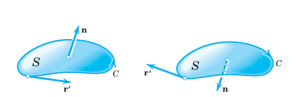
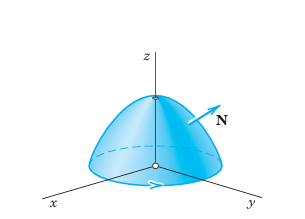
11.9.2 EXAMPLE 1 Verification of Stokes’s Theorem
Before we prove Stokes’s theorem, let us first get used to it by verifying it for \(\mathbf{F} = [y, z, x]\) and \(S\) the paraboloid (Figure 11.45): \[ z = f(x, y) = 1 - (x^2 + y^2), \quad z \ge 0. \]
Solution. The curve \(C\), oriented as in Figure 11.45, is the circle \(\mathbf{r}(s) = [\cos s, \sin s, 0]\). Its unit tangent vector is \(\mathbf{r}'(s) = [-\sin s, \cos s, 0]\). The function \(\mathbf{F} = [y, z, x]\) on \(C\) is \(\mathbf{F}(\mathbf{r}(s)) = [\sin s, 0, \cos s]\). Hence: \[ \oint_C \mathbf{F} \cdot d\mathbf{r} = \int_{0}^{2\pi} \mathbf{F}(\mathbf{r}(s)) \cdot \mathbf{r}'(s) \, ds = \int_{0}^{2\pi} [(\sin s)(-\sin s) + 0 + 0] \, ds = -\pi. \]
We now consider the surface integral. We have \(F_1 = y, F_2 = z, F_3 = x\), so that in (Equation 11.93) we obtain: \[ \operatorname{curl} \mathbf{F} = \operatorname{curl} [y, z, x] = [-1, \, -1, \, -1]. \] A normal vector of \(S\) is \(\mathbf{N} = \operatorname{grad}(z - f(x, y)) = [2x, 2y, 1]\). Hence \((\operatorname{curl} \mathbf{F}) \cdot \mathbf{N} = -2x - 2y - 1\). Now \(\mathbf{n} \, dA = \mathbf{N} \, dx \, dy\). Using polar coordinates \(r, \theta\) defined by \(x = r \cos \theta, y = r \sin \theta\) and denoting the projection of \(S\) into the \(xy\)-plane by \(R\), we thus obtain: \[ \iint_S (\operatorname{curl} \mathbf{F}) \cdot \mathbf{n} \, dA = \iint_R (\operatorname{curl} \mathbf{F}) \cdot \mathbf{N} \, dx \, dy = \iint_R (-2x - 2y - 1) \, dx \, dy \] \[ = \int_{0}^{2\pi} \int_{0}^{1} [-2r(\cos \theta + \sin \theta) - 1] \, r \, dr \, d\theta \] \[ = \int_{0}^{2\pi} \left[ -\frac{2}{3}(\cos \theta + \sin \theta) - \frac{1}{2} \right] \, d\theta = 0 - \frac{1}{2}(2\pi) = -\pi. \quad \square \]
Proof. We prove Stokes’s theorem. Geometry shows that (Equation 11.94) holds if the integrals of each component on both sides of (Equation 11.95) are equal; that is, \[ \iint_R \left( \frac{\partial F_1}{\partial z} N_2 - \frac{\partial F_1}{\partial y} N_3 \right) \, du \, dv = \oint_C F_1 \, dx, \tag{11.96}\] \[ \iint_R \left( -\frac{\partial F_2}{\partial z} N_1 + \frac{\partial F_2}{\partial x} N_3 \right) \, du \, dv = \oint_C F_2 \, dy, \tag{11.97}\] \[ \iint_R \left( \frac{\partial F_3}{\partial y} N_1 - \frac{\partial F_3}{\partial x} N_2 \right) \, du \, dv = \oint_C F_3 \, dz. \tag{11.98}\]
We prove this first for a surface \(S\) that can be represented simultaneously in the forms: \[ (a) \ z = f(x, y), \quad (b) \ y = g(x, z), \quad (c) \ x = h(y, z). \tag{11.99}\]
We prove (Equation 11.96), using (Equation 11.99)(a). Setting \(u = x, v = y\), we have from (Equation 11.99)(a): \[ \mathbf{r}(u, v) = \mathbf{r}(x, y) = [x, \, y, \, f(x, y)] = x\mathbf{i} + y\mathbf{j} + f(x, y)\mathbf{k} \] and in Section 11.6 by direct calculation: \[ \mathbf{N} = \mathbf{r}_x \times \mathbf{r}_y = [-f_x, \, -f_y, \, 1]. \]
Note that \(\mathbf{N}\) is an upper normal vector of \(S\), since it has a positive \(z\)-component. Also, \(R = S^*\), the projection of \(S\) into the \(xy\)-plane, with boundary curve \(C = C^*\) (Figure 11.46). Hence the left side of (Equation 11.96) is: \[ \iint_{S^*} \left( \frac{\partial F_1}{\partial z} (-f_y) - \frac{\partial F_1}{\partial y} (1) \right) \, dx \, dy. \tag{11.100}\]
We now consider the right side of (Equation 11.96). We transform this line integral over \(C = C^*\) into a double integral over \(S^*\) by applying Green’s theorem formula ( 11.32. This gives: \[ \oint_{C^*} F_1 \, dx = \iint_{S^*} \left( -\frac{\partial F_1}{\partial y} \right) \, dx \, dy. \]
Here, \(F_1 = F_1(x, y, f(x, y))\). Hence by the chain rule (see also Section 10.6), \[ \frac{\partial F_1(x, y, f(x, y))}{\partial y} = \frac{\partial F_1(x, y, z)}{\partial y} + \frac{\partial F_1(x, y, z)}{\partial z} \frac{\partial f}{\partial y} \quad [z = f(x, y)]. \]
We see that the negative of this derivative equals the integrand in (Equation 11.100). This proves (Equation 11.96). Relations (Equation 11.97) and (Equation 11.98) follow in the same way if we use (Equation 11.99)(b) and (Equation 11.99)(c), respectively. By addition we obtain (Equation 11.95). This proves Stokes’s theorem for a surface \(S\) that can be represented simultaneously in the forms (Equation 11.99).
As in the proof of the divergence theorem, our result may be immediately extended to a surface \(S\) that can be decomposed into finitely many pieces, each of which is of the kind just considered. This covers most of the cases of practical interest. The proof in the case of a most general surface \(S\) satisfying the assumptions of the theorem would require a limit process; this is similar to the situation in the case of Green’s theorem in Section 11.4. \(\blacksquare\)
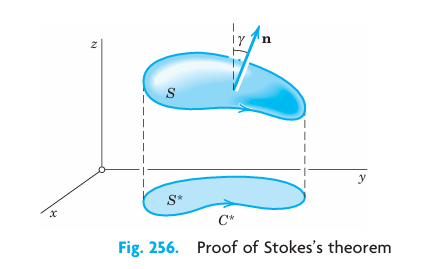
11.9.3 EXAMPLE 2 Green’s Theorem in the Plane as a Special Case of Stokes’s Theorem
Let \(\mathbf{F} = [F_1, F_2] = F_1\mathbf{i} + F_2\mathbf{j}\) be a vector function that is continuously differentiable in a domain in the \(xy\)-plane containing a simply connected bounded closed region \(S\) whose boundary \(C\) is a piecewise smooth simple closed curve. Then, according to (Equation 11.93), \[ (\operatorname{curl} \mathbf{F}) \cdot \mathbf{n} = (\operatorname{curl} \mathbf{F}) \cdot \mathbf{k} = \frac{\partial F_2}{\partial x} - \frac{\partial F_1}{\partial y}. \] Hence the formula in Stokes’s theorem now takes the form: \[ \iint_S \left( \frac{\partial F_2}{\partial x} - \frac{\partial F_1}{\partial y} \right) \, dA = \oint_C (F_1 \, dx + F_2 \, dy). \] This shows that Green’s theorem in the plane (Section 11.4) is a special case of Stokes’s theorem. \(\square\)
11.9.4 EXAMPLE 3 Evaluation of a Line Integral by Stokes’s Theorem
Evaluate \(\oint_C \mathbf{F} \cdot d\mathbf{r}\), where \(C\) is the circle \(x^2 + y^2 = 4, z = -3\), oriented counterclockwise as seen by a person standing at the origin, and, with respect to right-handed Cartesian coordinates, \[ \mathbf{F} = [y, \, xz^3, \, -zy^3] = y\mathbf{i} + xz^3\mathbf{j} - zy^3\mathbf{k}. \]
Solution. As a surface \(S\) bounded by \(C\) we can take the plane circular disk \(x^2 + y^2 \le 4\) in the plane \(z = -3\). Then \(\mathbf{n}\) in Stokes’s theorem points in the positive \(z\)-direction; thus \(\mathbf{n} = \mathbf{k}\). Hence \((\operatorname{curl} \mathbf{F}) \cdot \mathbf{n}\) is simply the component of \(\operatorname{curl} \mathbf{F}\) in the positive \(z\)-direction. Since \(\mathbf{F}\) with \(z = -3\) has the components \(F_1 = y, F_2 = -27x, F_3 = 3y^3\), we thus obtain: \[ (\operatorname{curl} \mathbf{F}) \cdot \mathbf{n} = \frac{\partial F_2}{\partial x} - \frac{\partial F_1}{\partial y} = -27 - 1 = -28. \] Hence the integral over \(S\) in Stokes’s theorem equals \(-28\) times the area \(4\pi\) of the disk \(S\). This yields the answer: \[ -28 \times 4\pi = -112\pi \approx -352. \quad \square \]
11.9.5 Physical Meaning of the Curl in Fluid Motion. Circulation
Let \(S_{r_0}\) be a circular disk of radius \(r_0\) and center \(P\) bounded by the circle \(C_{r_0}\) (Figure 11.47), and let \(\mathbf{F}(Q) = \mathbf{F}(x, y, z)\) be a continuously differentiable vector function in a domain containing \(S_{r_0}\). Then by Stokes’s theorem and the mean value theorem for surface integrals (see Section 11.6), \[ \oint_{C_{r_0}} \mathbf{F} \cdot d\mathbf{r} = \iint_{S_{r_0}} (\operatorname{curl} \mathbf{F}) \cdot \mathbf{n} \, dA = (\operatorname{curl} \mathbf{F}) \cdot \mathbf{n}(P^*) A_{r_0} \] where \(A_{r_0}\) is the area of \(S_{r_0}\) and \(P^*\) is a suitable point of \(S_{r_0}\). This may be written in the form: \[ (\operatorname{curl} \mathbf{F}) \cdot \mathbf{n}(P^*) = \frac{1}{A_{r_0}} \oint_{C_{r_0}} \mathbf{F} \cdot d\mathbf{r}. \]
In the case of a fluid motion with velocity vector \(\mathbf{F} = \mathbf{v}\), the integral \[ \oint_{C_{r_0}} \mathbf{v} \cdot d\mathbf{r} \] is called the circulation of the flow around \(C_{r_0}\). It measures the extent to which the corresponding fluid motion is a rotation around the circle \(C_{r_0}\). If we now let \(r_0\) approach zero, we find: \[ (\operatorname{curl} \mathbf{v}) \cdot \mathbf{n}(P) = \lim_{r_0 \to 0} \frac{1}{A_{r_0}} \oint_{C_{r_0}} \mathbf{v} \cdot d\mathbf{r}; \tag{11.101}\] that is, the component of the curl in the positive normal direction can be regarded as the specific circulation (circulation per unit area) of the flow in the surface at the corresponding point. \(\square\)
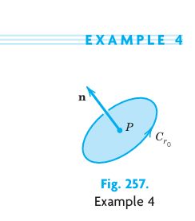
11.9.6 EXAMPLE 5 Work Done in the Displacement around a Closed Curve
Find the work done by the force \(\mathbf{F} = 2xy^3 \sin z \mathbf{i} + 3x^2 y^2 \sin z \mathbf{j} + x^2 y^3 \cos z \mathbf{k}\) in the displacement around the curve of intersection of the paraboloid \(z = x^2 + y^2\) and the cylinder \((x - 1)^2 + y^2 = 1\).
Solution. This work is given by the line integral in Stokes’s theorem. Now \(\mathbf{F} = \operatorname{grad} f\), where \(f = x^2 y^3 \sin z\) and \(\operatorname{curl}(\operatorname{grad} f) = \mathbf{0}\) (see (2) in Section 10.9), so that \((\operatorname{curl} \mathbf{F}) \cdot \mathbf{n} = 0\) and the work is 0 by Stokes’s theorem. This agrees with the fact that the present field is conservative (definition in Section 10.7). \(\square\)
11.9.7 Stokes’s Theorem Applied to Path Independence
We emphasized in Section 11.2 that the value of a line integral generally depends not only on the function to be integrated and on the two endpoints \(A\) and \(B\) of the path of integration \(C\), but also on the particular choice of a path from \(A\) to \(B\). In Theorem 3 of Section 11.2 we proved that if a line integral \[ \int_C \mathbf{F}(\mathbf{r}) \cdot d\mathbf{r} = \int_C (F_1 \, dx + F_2 \, dy + F_3 \, dz) \tag{11.102}\] (involving continuous \(F_1, F_2, F_3\) that have continuous first partial derivatives) is path independent in a domain \(D\), then \(\operatorname{curl} \mathbf{F} = \mathbf{0}\) in \(D\). And we claimed in Section 11.2 that, conversely, \(\operatorname{curl} \mathbf{F} = \mathbf{0}\) everywhere in \(D\) implies path independence of (Equation 11.102) in \(D\) provided \(D\) is simply connected. A proof of this needs Stokes’s theorem and can now be given as follows.
Let \(C\) be any closed path in \(D\). Since \(D\) is simply connected, we can find a surface \(S\) in \(D\) bounded by \(C\). Stokes’s theorem applies and gives: \[ \oint_C (F_1 \, dx + F_2 \, dy + F_3 \, dz) = \oint_C \mathbf{F} \cdot d\mathbf{r} = \iint_S (\operatorname{curl} \mathbf{F}) \cdot \mathbf{n} \, dA \] for proper direction on \(C\) and normal vector \(\mathbf{n}\) on \(S\). Since \(\operatorname{curl} \mathbf{F} = \mathbf{0}\) in \(D\), the surface integral and hence the line integral are zero. This and Theorem 2 of Section 11.2 imply that the integral (Equation 11.102) is path independent in \(D\). This completes the proof. \(\square\)
11.9.8 PROBLEM SET 10.9
1–10 DIRECT INTEGRATION OF SURFACE INTEGRALS
Evaluate the surface integral \(\iint_S (\operatorname{curl} \mathbf{F}) \cdot \mathbf{n} \, dA\) directly for the given \(\mathbf{F}\) and \(S\).
1. \(\mathbf{F} = [z^2, -x^2, 0]\), \(S\) the rectangle with vertices \((0, 0, 0), (1, 0, 0), (0, 4, 4), (1, 4, 4)\).
2. \(\mathbf{F} = [-13 \sin y, 3 \sinh z, x]\), \(S\) the rectangle with vertices \((0, 0, 2), (4, 0, 2), (4, \pi/2, 2), (0, \pi/2, 2)\).
3. \(\mathbf{F} = [e^{-z}, e^{-z} \cos y, e^{-z} \sin y]\), \(S: z = y^2/2, -1 \le x \le 1, 0 \le y \le 1\).
4. \(\mathbf{F}\) as in Prob. 1, \(z = xy\) (\(0 \le x \le 1, 0 \le y \le 4\)). Compare with Prob. 1.
5. \(\mathbf{F} = [z^2, 3x, 0]\), \(S: 0 \le x \le a, 0 \le y \le a, z = 1\).
6. \(\mathbf{F} = [y^3, -x^3, 0]\), \(S: x^2 + y^2 \le 1, z = 0\).
7. \(\mathbf{F} = [e^y, e^z, e^x]\), \(S: z = x^2\) (\(0 \le x \le 2, 0 \le y \le 1\)).
8. \(\mathbf{F} = [z^2, x^2, y^2]\), \(S: z = \sqrt{x^2 + y^2}, y \ge 0, 0 \le z \le h\).
9. Verify Stokes’s theorem for \(\mathbf{F}\) and \(S\) in Prob. 5.
10. Verify Stokes’s theorem for \(\mathbf{F}\) and \(S\) in Prob. 6.
11. Stokes’s theorem not applicable. Evaluate \(\oint_C \mathbf{F} \cdot d\mathbf{r}\) for \(\mathbf{F} = (x^2 + y^2)^{-1}[-y, x]\), \(C: x^2 + y^2 = 1, z = 0\), oriented clockwise. Why can Stokes’s theorem not be applied? What (false) result would it give?
12. WRITING PROJECT. Grad, Div, Curl in Connection with Integrals. Make a list of ideas and results on this topic in this chapter. See whether you can rearrange or combine parts of your material. Then subdivide the material into 3–5 portions and work out the details of each portion. Include no proofs but simple typical examples of your own that lead to a better understanding of the material.
13–20 EVALUATION OF \(\oint_C \mathbf{F} \cdot d\mathbf{r}\)
Calculate this line integral by Stokes’s theorem for the given \(\mathbf{F}\) and \(C\). Assume the Cartesian coordinates to be right-handed and the \(z\)-component of the surface normal to be nonnegative.
13. \(\mathbf{F} = [-5y, 4x, z]\), \(C\) the circle \(x^2 + y^2 = 16, z = 4\).
14. \(\mathbf{F} = [z^3, x^3, y^3]\), \(C\) the circle \(x = 2, y^2 + z^2 = 9\).
15. \(\mathbf{F} = [y^2, x^2, z+x]\) around the triangle with vertices \((0, 0, 0), (1, 0, 0), (1, 1, 0)\).
16. \(\mathbf{F} = [e^y, 0, e^x]\), \(C\) as in Prob. 15.
17. \(\mathbf{F} = [0, z^3, 0]\), \(C\) the boundary curve of the cylinder \(x^2 + y^2 = 1, x \ge 0, y \ge 0, 0 \le z \le 1\).
18. \(\mathbf{F} = [-y, 2z, 0]\), \(C\) the boundary curve of \(y^2 + z^2 = 4, z \ge 0, 0 \le x \le h\).
19. \(\mathbf{F} = [z, e^z, 0]\), \(C\) the boundary curve of the portion of the cone \(z = \sqrt{x^2 + y^2}, x \ge 0, y \ge 0, 0 \le z \le 1\).
20. \(\mathbf{F} = [0, \cos x, 0]\), \(C\) the boundary curve of \(y^2 + z^2 = 4, y \ge 0, z \ge 0, 0 \le x \le \pi\).
11.10 Review Questions and Problems
1. State from memory how to evaluate a line integral. A surface integral.
2. What is path independence of a line integral? What is its physical meaning and importance?
3. What line integrals can be converted to surface integrals and conversely? How?
4. What surface integrals can be converted to volume integrals? How?
5. What role did the gradient play in this chapter? The curl? State the definitions from memory.
6. What are typical applications of line integrals? Of surface integrals?
7. Where did orientation of a surface play a role? Explain.
8. State the divergence theorem from memory. Give applications.
9. In some line and surface integrals we started from vector functions, but integrands were scalar functions. How and why did we proceed in this way?
10. State Laplace’s equation. Explain its physical importance. Summarize our discussion on harmonic functions.
11–20 LINE INTEGRALS (WORK INTEGRALS)
Evaluate \(\int_C \mathbf{F}(\mathbf{r}) \cdot d\mathbf{r}\) for given \(\mathbf{F}\) and \(C\) by the method that seems most suitable. Remember that if \(\mathbf{F}\) is a force, the integral gives the work done in the displacement along \(C\). Show details.
11. \(\mathbf{F} = [2x^2, -4y^2]\), \(C\) the straight-line segment from \((4, 2)\) to \((-6, 10)\).
12. \(\mathbf{F} = [y \cos xy, x \cos xy, e^z]\), \(C\) the straight-line segment from \((\pi, 1, 0)\) to \((1, \pi, 1)\).
13. \(\mathbf{F} = [y^2, 2xy + 5 \sin x, 0]\), \(C\) the boundary of \(0 \le x \le \pi/2, 0 \le y \le 2, z = 0\).
14. \(\mathbf{F} = [-y^3, x^3 + e^{-y}, 0]\), \(C\) the circle \(x^2 + y^2 = 25, z = 2\).
15. \(\mathbf{F} = [x^3, e^{2y}, e^{-4z}]\), \(C: x^2 + 9y^2 = 9, z = x^2\).
16. \(\mathbf{F} = [x^2, y^2, y^2 x]\), \(C\) the helix \(\mathbf{r} = [2 \cos t, 2 \sin t, 3t]\) from \((2, 0, 0)\) to \((-2, 0, 3\pi)\).
17. \(\mathbf{F} = [9z, 5x, 3y]\), \(C\) the ellipse \(x^2 + y^2 = 9, z = x + 2\).
18. \(\mathbf{F} = [\sin \pi y, \cos \pi x, \sin \pi x]\), \(C\) the boundary curve of \(0 \le x \le 1, 0 \le y \le 2, z = x\).
19. \(\mathbf{F} = [z, 2y, x]\), \(C\) the helix \(\mathbf{r} = [cos t, \sin t, t]\) from \((1, 0, 0)\) to \((1, 0, 2\pi)\).
20. \(\mathbf{F} = [z e^{xz}, 2 \sinh 2y, x e^{xz}]\), \(C\) the parabola \(y = x, z = x^2, -1 \le x \le 1\).
21–25 DOUBLE INTEGRALS, CENTER OF GRAVITY
Find the coordinates \(\bar{x}, \bar{y}\) of the center of gravity of a mass of density \(f(x, y)\) in the region \(R\). Sketch \(R\), show details.
21. \(f = xy\), \(R\) the triangle with vertices \((0, 0), (2, 0), (2, 2)\).
22. \(f = x^2 + y^2\), \(R: x^2 + y^2 \le a^2, y \ge 0\).
23. \(f = x^2\), \(R: -1 \le x \le 2, x^2 \le y \le x + 2\). Why is \(\bar{x} > 0\)?
24. \(f = 1\), \(R: 0 \le y \le 1 - x^4\).
25. \(f = ky, k > 0\) arbitrary, \(0 \le y \le 1 - x^2, 0 \le x \le 1\).
26. Why are \(\bar{x}\) and \(\bar{y}\) in Prob. 25 independent of \(k\)?
27–35 SURFACE INTEGRALS \(\iint_S \mathbf{F} \cdot \mathbf{n} \, dA\). DIVERGENCE THEOREM
Evaluate the integral directly or, if possible, by the divergence theorem. Show details.
27. \(\mathbf{F} = [ax, by, cz]\), \(S\) the sphere \(x^2 + y^2 + z^2 = 36\).
28. \(\mathbf{F} = [x + y^2, y + z^2, z + x^2]\), \(S\) the ellipsoid with semi-axes of lengths \(a, b, c\).
29. \(\mathbf{F} = [y + z, 20y, 2z^3]\), \(S\) the surface of \(0 \le x \le 2, 0 \le y \le 1, 0 \le z \le y\).
30. \(\mathbf{F} = [1, 1, 1]\), \(S: x^2 + y^2 + 4z^2 = 4, z \ge 0\).
31. \(\mathbf{F} = [e^x, e^y, e^z]\), \(S\) the surface of the box \(|x| \le 1, |y| \le 1, |z| \le 1\).
32. \(\mathbf{F} = [y^2, x^2, z^2]\), \(S\) the portion of the paraboloid \(z = x^2 + y^2, z \le 9\).
33. \(\mathbf{F} = [y^2, x^2, z^2]\), \(S: \mathbf{r} = [u, u^2, v], 0 \le u \le 2, -2 \le v \le 2\).
34. \(\mathbf{F} = [x, xy, z]\), \(S\) the boundary of \(x^2 + y^2 \le 1, 0 \le z \le 5\).
35. \(\mathbf{F} = [x + z, y + z, x + y]\), \(S\) the sphere of radius 3 with center 0.
11.11 Summary
11.11.1 Vector Integral Calculus. Integral Theorems
Chapter 9 extended differential calculus to vectors, that is, to vector functions \(\mathbf{v}(x, y, z)\) or \(\mathbf{v}(t)\). Similarly, Chapter 10 extends integral calculus to vector functions. This involves line integrals (Section 11.1), double integrals (Section 11.3), surface integrals (Section 11.6), and triple integrals (Section 11.7) and the three “big” theorems for transforming these integrals into one another, the theorems of Green (Section 11.4), Gauss (Section 11.7), and Stokes (Section 11.9).
The analog of the definite integral of calculus is the line integral (Section 11.1): \[ \int_C \mathbf{F}(\mathbf{r}) \cdot d\mathbf{r} = \int_C (F_1 \, dx + F_2 \, dy + F_3 \, dz) = \int_{a}^{b} \mathbf{F}(\mathbf{r}(t)) \cdot \frac{d\mathbf{r}}{dt} \, dt \tag{11.103}\] where \(C: \mathbf{r}(t) = [x(t), y(t), z(t)] = x(t)\mathbf{i} + y(t)\mathbf{j} + z(t)\mathbf{k}\) (\(a \le t \le b\)) is a curve in space (or in the plane). Physically, (Equation 11.103) may represent the work done by a (variable) force in a displacement. Other kinds of line integrals and their applications are also discussed in Section 11.1.
Independence of path of a line integral in a domain \(D\) means that the integral of a given function over any path \(C\) with endpoints \(P\) and \(Q\) has the same value for all paths from \(P\) to \(Q\) that lie in \(D\); here \(P\) and \(Q\) are fixed. An integral (Equation 11.103) is independent of path in \(D\) if and only if the differential form \(F_1 \, dx + F_2 \, dy + F_3 \, dz\) with continuous \(F_1, F_2, F_3\) is exact in \(D\) (Section 11.2). Also, if \(\operatorname{curl} \mathbf{F} = \mathbf{0}\), where \(\mathbf{F} = [F_1, F_2, F_3]\) has continuous first partial derivatives in a simply connected domain \(D\), then the integral (Equation 11.103) is independent of path in \(D\) (Section 11.2).
11.11.2 Integral Theorems
The formula of Green’s theorem in the plane (Section 11.4): \[ \iint_R \left( \frac{\partial F_2}{\partial x} - \frac{\partial F_1}{\partial y} \right) \, dx \, dy = \oint_C (F_1 \, dx + F_2 \, dy) \tag{11.104}\] transforms double integrals over a region \(R\) in the \(xy\)-plane into line integrals over the boundary curve \(C\) of \(R\) and conversely. For other forms of (Equation 11.104) see Section 11.4.
Similarly, the formula of the divergence theorem of Gauss (Section 11.7): \[ \iiint_T \operatorname{div} \mathbf{F} \, dV = \iint_S \mathbf{F} \cdot \mathbf{n} \, dA \tag{11.105}\] transforms triple integrals over a region \(T\) in space into surface integrals over the boundary surface \(S\) of \(T\), and conversely. Formula (Equation 11.105) implies Green’s formulas: \[ \iiint_T (f \nabla^2 g + \operatorname{grad} f \cdot \operatorname{grad} g) \, dV = \iint_S f \frac{\partial g}{\partial n} \, dA, \tag{11.106}\] \[ \iiint_T (f \nabla^2 g - g \nabla^2 f) \, dV = \iint_S \left( f \frac{\partial g}{\partial n} - g \frac{\partial f}{\partial n} \right) \, dA. \tag{11.107}\]
Finally, the formula of Stokes’s theorem (Section 11.9): \[ \iint_S (\operatorname{curl} \mathbf{F}) \cdot \mathbf{n} \, dA = \oint_C \mathbf{F} \cdot d\mathbf{r} \tag{11.108}\] transforms surface integrals over a surface \(S\) into line integrals over the boundary curve \(C\) of \(S\) and conversely.
A region \(R\) is a domain (Section 10.6) plus, perhaps, some or all of its boundary points. \(R\) is closed if its boundary (all its boundary points) are regarded as belonging to \(R\); and \(R\) is bounded if it can be enclosed in a circle of sufficiently large radius. A boundary point \(P\) of \(R\) is a point (of \(R\) or not) such that every disk with center \(P\) contains points of \(R\) and also points not of \(R\).↩︎
Named after the German mathematician CARL GUSTAV JACOB JACOBI (1804–1851), known for his contributions to elliptic functions, partial differential equations, and mechanics.↩︎
GEORGE GREEN (1793–1841), English mathematician who was self-educated, started out as a baker, and at his death was fellow of Caius College, Cambridge. His work concerned potential theory in connection with electricity and magnetism, vibrations, waves, and elasticity theory. It remained almost unknown, even in England, until after his death.↩︎
A “domain containing \(R\)” in the theorem guarantees that the assumptions about \(F_1\) and \(F_2\) at boundary points of \(R\) are the same as at other points of \(R\).↩︎
AUGUST FERDINAND MÖBIUS (1790–1868), German mathematician, student of Gauss, known for his work in surface theory, geometry, and complex analysis (see Sec. 17.2).↩︎
JACOB STEINER (1796–1863), Swiss geometer, born in a small village, learned to write only at age 14, became a pupil of Pestalozzi at 18, later studied at Heidelberg and Berlin and, finally, because of his outstanding research, was appointed professor at Berlin University.↩︎
PAPPUS OF ALEXANDRIA (about A.D. 300), Greek mathematician. The theorem is also called Guldin’s theorem. HABAKUK GULDIN (1577–1643) was born in St. Gallen, Switzerland, and later became professor in Graz and Vienna.↩︎
PETER GUSTAV LEJEUNE DIRICHLET (1805–1859), German mathematician, studied in Paris under Cauchy and others and succeeded Gauss at Göttingen in 1855. He became known by his important research on Fourier series (he knew Fourier personally) and in number theory.↩︎
Sir GEORGE GABRIEL STOKES (1819–1903), Irish mathematician and physicist who became a professor in Cambridge in 1849. He is also known for his important contribution to the theory of infinite series and to viscous flow (Navier–Stokes equations), geodesy, and optics. Piecewise smooth curves and surfaces are defined in Section 11.1 and 10.5.↩︎